Chapter 3. Contest of Champions: Analysis of the Demos
This section is the center piece of the thesis. It provides a detailed analysis of the demos produced by The Exceptions and by other relevant demo-groups on the Atari ST in during the research period. The analysis will be based on hermeneutic interpretations of the demo art and its component images, music, and scrolling text from the perspective of what they depict, technical aspects, the tone, and the cultural perspective. As a means to evaluate the significance of demo art for media art history, the objective here is to learn about the limitations that the demo-makers managed to circumvent, the techniques they employed, and the messages they sent out to their audiences.
The source for the demos examined is pouet.net, the historic demoscene archive introduced above. Where possible, the demos were screened on the original hardware, a modified Atari Mega STE. This machine was released five years after the Atari ST, so it is not 100% compatible. If a demo could not be run on the original hardware, it ran in the open-source Atari ST emulator Hatari on MacOS and on the FPGA retro computer MiST (see Appendix I on the conservation and preservation of demo art for further information on emulation).
3.1 The Year 1987: The Humble Beginnings of the Demo Scene
This analysis starts with the 1987 Atari ST demos. While the Atari 520ST was introduced in 1985, it was only released to a wider audience in 1986. The Atari Corporation first provided small programs demonstrating the capabilities of the Atari ST for use at the point-of-sale, but these were limited to image slideshows showcasing the advanced graphics without any software tricks. The very first demo produced by crackers and demo-makers was released in 1987 by The Exceptions. It was the inconspicuously named README.PRG. The demo-group released three more demos in 1987 after README.PRG: The Little Sound Demo (LSD), the Little Color Demo (LCD), and the Super-Neo-Demo-Show.
3.1.1 README.PRG
In March 1987, The Exceptions released the very first demo on the Atari ST, README.PRG. The file was barely 80KB. Files named README usually contained instructions or supplementary information relevant to an application, so users would normally open this kind of file before using an application. The Exceptions did not provide a text file; they provided an executable program. When users ran it first in 1987, it baffled them.

Figure 19: README.PRG, the first demo by The Exceptions (screenshot)
Compared to later demos, it was rather restricted in scope. README.PRG was a single-screen demo with scrolling text. Roughly 80% of the screen was occupied by an image created by Erik Simon (ES), and along the lower fifth, a scrolling text ran across an animated background.
3.1.1.1 The Elements of Design of the Readme Demo
The static graphic shows a lush fantasy landscape. The image's central piece is a red dragon perched on the base of the picture with wings spread wide. Visible in the distance behind the dragon is a temple made of square gray stones with what looks like a statue of a serpent's head hanging above the portal. Behind the temple's golden dome, there are gnarly gray mountains with other dragons flying between them. The sky is cloudy, but a bright gradient of colors stretches from the clouds to the mountains.
The red dragon's arms are resting on a box with the initials "TEX" inscribed on it; the dragon's tail is tenderly wrapped around it, somewhat obscuring the letters. The dragon tilts its head downwards and breaths fire onto a red-and-white sphere, clearly identifiable as the Amiga ball from the earliest demos on the competing machine.
The first thing that Atari ST users notice on the colorful screen are the many colors, more than the 16 colors that Atari ST usually displays. The sky's gradient already shows more than three dozen colors, far surpassing the ST's color limit; the hues of the temple, the shades of the mountains, and the saturated green of the meadows that are interfused with rich blue streams of water. In the center stands the red dragon with its venomous crimson tones, ripping into the landscape with flames engulfing the symbol of Amiga's superiority. While the dragon might well be interpreted as the Atari ST, it could well be the demo-makers themselves.
3.1.1.2 The Scrolling Text
These are the full contents of the demo's scrolling text with all its charming errors (the original was in all caps; the quote is converted to mixed case to make it more readable):
"Hi there!!! Welcome to the first demo screen produced by the Exceptions (TEX)! Maybe you remember all those funny little programs called "demos" on the good old '64. Here's now the first one of it's kind on Jack's good new ST. Yes, we all know that these PRG's aren't good for nothing, except for two little things... you sit and wonder whats going on with your computer, and we're getting a lot of know-how.
The Exceptions are: -ME- and ES
All the code in our demo was written by -ME- (the king of interrupts!). Graphics, characterset, colors (many, many colors eh?) and text by ES. The music was "lended" from the game 'Extensor'. Try the keys 1 - 5 (0 to escape demo)! We bet that you thought a softscrolling like this is impossible on a bitmap-machine like the st. But as you see… and it's even running on the VBL-IRQ! You don't know what the hell this means? Oh, no not again such a C-programmer! Long live 68000-assembly language!
And now, what nobody wants to see: The greetings.
Ok, hi to the few people we know: SSS, Softknight and Indy, although he doesn't like the ST... Oh yes: A very special hello to all the poor Amiga-owners who can't write assembly programs on their pretty lady (haw, haw, haw…)! To finance this program a little bit of advertising was necessary: 'listen all you people to the greatest blues-band on earth: The Dingsbums!!!! Motto: Es werd gegroovt un' werd gegröhlt un' mit em Bier de Hals geölt! Gigs everywhere round Germersheim!' Let's come to an end. Folks: excuse me if there are any 'bugs' in the text. I haven't solved enough Infocom-adventures yet. Bye for now. We're working on our second demo, the shape-out seems to be a little bit difficult. see you..."
From the outset The Exceptions had already formulated a strong motivation to create demos: to prove that the cheaper computer, the Atari ST, was as capable as the pricier Commodore Amiga. From this perceived position of inferiority, the purpose of their demos was not only to look "cool" for the sake of it, but also to beat the competing 16-bit platform.
Despite its charming spelling mistakes and Germanized English phrasing, the scrolling text of README.PRG reads like a simple manifesto. The graphics artist ES (Erik Simon) praises their work, commemorates the achievement of his partner Udo Fischer (-ME-), who coded the demo, and sends out greetings to their friends. But most of all, The Exceptions showed that they achieved something that was thought impossible: displaying many more colors at the same time than the Atari ST was deemed capable of showing and a soft scrolling text across the bottom of the screen. The background of the text even scrolls at a slightly slower pace, creating a parallax scrolling effect.
All of these effects were only possible by coding natively and directly on the processor in assembly language, the last human-readable, but still very cryptic, language before reaching actual machine code composed of ones and zeros. The disadvantage of assembly language is that it requires deep knowledge of the computer's inner workings and requires a greater proficiency than the so-called higher programming languages, like C, Pascal, and BASIC. The big advantage is the sheer speed of execution of programs written in assembly language. A good assembler programmer is also not limited by any of the formalities and requirements that higher programming languages or the operating system impose; if an assembler coder manages to find a way to coerce the hardware into doing something, then it will work. The central processing unit (CPU) or processor of the Atari ST was the Motorola 68000. The same processor also beats at the heart of the Commodore Amiga, the original Apple Macintosh, and the Sega MegaDrive/Genesis.
In their scrolling text, The Exceptions go on to mock anyone who cannot write 68000 assembly language, knowing full well that it is a daunting endeavor. Using a double entendre, ES calls anyone who does not know what VBL-IRQ means a C programmer. This might well be a programmer who writes code in the programming language C, or a class c (third-class) programmer.
They go on to ridicule owners of the Commodore Amiga, but there seems to be a nod to the superiority of the Amiga. They call the machine a "pretty lady" and then exclaim a taunting onomatopoeic laugh, which can be read as a sexist, derogatory remark. It is also a play upon the Spanish meaning of the word "amiga" as girlfriend.
In a latter section of the scrolling text, the writer alludes to advertising being necessary to finance the demo; this is quite likely tomfoolery. Both Erik Simon (ES) and Udo Fischer (-ME-) were fans of a band local to the town of Germersheim in the West German province of Rhineland-Palatinate (Rheinland-Pfalz). They go on to recount the motto of the band in German, which translates to:
"We groove, we shout, and we oil our throats with beer."
The text does have the occasional spelling mistake, but English was not the writer's first language. The punctuation is an interesting mix between German and French. Some of the opening quotes were the lower variety („...”) commonly used in German, while other quotes were a slightly wrong variation of the quotes used in French («...»), but as «...». This does not mean much, except that the text was not proofread for mistakes.
At the very end, the writer even apologizes for mistakes in the text, calling them bugs, and continues that he had not yet "solved enough Infocom-adventures." Infocom was a US-based software company known in the late 1970s through the late 1980s for their well-written text adventures, e.g., Zork, the Great Underground Empire, or The Leather Goddesses of Phobos. These were a type of text-based interactive fiction where the player reads a description of a situation or scene and then types their commands (e.g., GO EAST, GET SWORD, LIGHT FIRE WITH MATCHES) into the command prompt. The program interprets the commands, leading the player onto different situations or scenes.
From 2000 onward, this form would be retroactively named interactive fiction.[42] These text adventures were only available in English, and they have not been localized to this day because merely translating the descriptions would be insufficient. It would instead be required to adapt the text parser, the part of the application that interprets the commands, to a language other than English. However, English had its advantage, as players who were not fluent in English would learn a lot of the language by playing text adventures. They would expand their vocabulary and learn how to express themselves in a way that the English-language text parser would understand.
Before Erik Simon (ES), the writer of the scrolling text, bids farewell, he announces he and Udo Fischer (-ME-) are working on another demo.
3.1.1.3 Technical Limitations Broken in README.PRG
The README demo broke several the Atari ST's technical limitations. At this point in time, The Exceptions only consisted of Udo Fischer (-ME-) and Erik Simon (ES), so they focused on graphics and scrolling. The Atari ST did not have any dedicated scrolling hardware capabilities, so programming smooth scrolling was up to smart programmers. The computer had a vast palette of 512 colors but was straddled with the 16 color-limitation.[43] The Exceptions managed to produce:
- 92 colors on the screen at the same time (from the overall palette of 512 available colors)
- Smooth horizontal scrolling at 50Hz
How did The Exceptions manage to get that many colors on the screen at the same time? They used a technique called "raster interrupts." As the name suggests, this technique combines the "raster" method of drawing a screen image on a cathode ray tube monitor or television with the ability to "interrupt" a processor's work to produce small changes and immediately return to the original task.
An "interrupt" is a signal from a computer's component sent to the main processor (CPU) to halt any operation in progress and jump to a specific routine in memory to do something else. After completing the task in the routine, the CPU resumes at exactly the point it was interrupted.
The term "raster" is used to describe the scanlines on a computer screen (see figure 20). A computer creates the screen image on the monitor line by line by feeding information to the electron beam that travels across the monitor or TV screen. This happened 50 times a second on the European screens and 60 times a second on US and North American screens due to the different electrical frequencies used in the regions.

Figure 20: The horizontal path of the electron beam on the CRT display
The Atari ST had three resolutions. The high and medium resolutions were conceived for business applications such as word processors, spreadsheets, databases, and desktop publishing, while the low resolution was the one The Exceptions used for their demos (and was used for most Atari games of the day).
The low-res screen was 320 pixels wide and 200 pixels high. This area is a large part of the screen, but it does not occupy all of the screen because, in the 1980s and early 1990s, computer screens had a border around the main image. The smaller image area allowed the Atari ST to work with different TV standards (the PAL standard in Europe with a slightly larger available area but a lower frequency of 50Hz, and the NTSC standard in North America, with a small area but a higher screen refresh rate of 60Hz). The borders also keep the main image in the center of the screen, away from the curvature of the TV/monitor tube where it would suffer from less distortion (which was much greater towards the edges). Effectively, it means that around 75% of the screen area was actually available to use (see figure 21).

Figure 21: The differences in size, depending on TV standard and the borders used by the Atari ST
3.1.1.4 Adapting the Scanline
A "raster interrupt" is an interrupt that is deliberately triggered when the electron beam that draws the raster of scanlines is at a certain scanline on the screen. The interrupt sends the processor to a routine that produces a change in the way the scanline is drawn, e.g., change the border color or the complete palette before the processor proceeds to the next scanline (see figure 22). When the change induced by the interrupt has been registered, the processor resumes its previous task under the new conditions.
In this case, the next scanline is drawn with a changed set of colors. This happens so quickly that the user does not notice any delay but is presented with much more colorful graphics than they thought possible. Unfortunately, the more interrupts a processor must handle, the less time it can spend on other tasks; if the processor must switch color palettes at every scanline, it will suffer a slight loss of performance. Precise timing is necessary to achieve the desired effects; the switch between two palettes must be completely free of flickering and distortions to look appealing and free of errors.

Figure 22: The palette switches on the main screen of the README demo by The Exceptions
In the README demo, the ST's palette switches multiple times on the main screen. The top section switches parts of the palette half a dozen times to accommodate the colorful gradient of the sky (only the colors necessary for the clouds and the mountains remained constant across most of the sky's palettes). Once the sky section no longer needs to be accounted for, the palettes only switch a few times until half of the screen has been drawn. Gold tones for the dome of the temple are needed and different shades of gray for the stone blocks of the temple.
The bottom half of the image actually has a single 16-color palette of greens, blues, and reds. The bottom quarter is occupied by the scrolling text, which consists of gold text on a purple background, which looks like it is scrolling in the opposite direction of the text. This section has a separate 16-color palette composed of yellow tones for the gold of the text, and purple shades for the background. Only 14 colors are visible in this bottom section because two color registers are reserved for the transparency of the letters.
3.1.1.5 Silky Smooth Scrolling
The origins of the word "scrolling" might already be forgotten, but it means "screen rolling." Essentially, the computer is moving the contents of the screen in any direction. On the Atari ST, it makes no difference if the screen contains graphics or characters; for example, when you list a text file on the screen, the text scrolls up. More complex scrolling is common in arcades and video games, called "soft scrolling", where the graphics scroll smoothly across the screen without stuttering or jerking.
In contrast to other computers of its generation (and even previous ones), the Atari ST had special chips or hardware to help with scrolling that had to be done with the ST's processor. To achieve this level of smoothness, there are several elements to be considered. The range of movement should not be too large, and the screen should refresh at 1/50th of a second, displaying the next phase of the scrolled contents.
The Exceptions had a hard time figuring out how to produce smooth horizontal scrolling on the Atari ST. They found that vertical scrolling was easy, but they wanted to use it for their scrolling text where the letters travel from the right to the left so that the viewer can read them.
The reason for the ST's difficulty with horizontal scrolling is the way it creates graphics. A bitmap image is composed of sequences of words (two bytes) in memory which contain 16 pixels of image information. If you want to shift the whole screen image or a part of it by one pixel up or down, it is sufficient to move the block of memory by a word, and the CPU can do this very quickly and smoothly. If you want to shift the screen horizontally, from right to left (or the other way), then the increment of a full word (two bytes or 16 pixels) is too large. Shifting the screen by less than a word means the actual bit content of each word must be moved. The 68000 CPU can handle about 32 lines, but anything beyond that would require its full focus, leaving no performance capacity for other operations, like music or setting up any other contents.
The Exceptions needed to avoid any scrolling operations that ran on a bit-level. Shifting a full word at a time was not smooth enough because that shifts the screen by 16-pixel increments and causes a stutter. Therefore, Udo Fischer developed a technique that used eight buffers, and the screen graphics were stored pre-shifted in two-pixel increments in each of these buffers. When the Atari ST needed to display the next step of a scrolling image, it retrieved the pre-shifted graphics from the next buffer. When seven buffers with the pre-shifted images were displayed, the processor shifted the original graphic by a full word of 16 pixels and displayed this next. To save time needed to copy the buffer contents to the screen, The Exceptions used eight virtual screens in memory and shifted the address of the graphics memory from one buffer to the next. The primary disadvantage of this method was that it was extremely memory intensive. At 32KB per screen buffer, this meant that the ST had to occupy 256KB in total for all eight buffers to achieve smooth scrolling.
3.1.2 Little Sound Demo (LSD)
When The Exceptions created their README.PRG demo, the only members were Udo Fischer and Erik Simon. They had programming and graphics covered, but they did not have a musician. For their first demo's music, they simply used the tune from the game Extensor, which sounded great and did a good job of using the mediocre sound chip of the Atari ST.
The Exceptions released their second demo a few months after README, and it focused on music. In the Little Sound Demo, the newest member of The Exceptions, Mad Max Jochen Hippel, was the true star. He had faithfully converted tunes from the Commodore 64 to the Atari ST. Though from a previous computer generation, the C64's SID chip was superior to the ST's YM-chip, and Mad Max meticulously converted a total of 16 minutes of music from games on the Commodore 64 that famed composer and chip musician Rob Hubbard wrote for International Karate, Monty on the Run, Commando, and Flash Gordon. Mad Max composed four more tunes for the Atari's YM/AY chip.
Rob Hubbard was a commercial music composer for video games, and at the time, was still actively writing music for 8-bit systems. His music was particularly popular on the Commodore 64, where he managed to write some of the most exciting game music that often exceeded the game in quality. In many cases, users would purchase games specifically because the game music was written by Hubbard.
He was well-known in the niche circle of gamers in the 1980s, and in 2016, Hubbard received an honorary doctorate from Abertay University for his gaming music.[44] In 2019, Hubbard performed his 8-bit music rearranged for a full classical orchestra in Hull.[45] But in 1987, writing music that was as good as Hubbard's was the Holy Grail in the demoscene, and the Little Sound Demo, naughtily abbreviated as LSD, lived up to this promise.

Figure 23: The Little Sound Demo (LSD) by The Exceptions (screenshot)
The demo still only featured one screen and a scrolling text. The top half showed a cartoon depiction of the Atari ST with eyes and a mouth spitting a music note on a Commodore 64 that itself had a look of bemusement, sticking out its cartoon tongue when hit by the note. The right showed the logo of The Exceptions and the name of the demo.
The graphics were not the demo's strong suit; rather, it was the sound. Users could hit the keys A to L on their Atari's keyboard and listen to faithful conversions from game music composed by Rob Hubbard and four original pieces by Mad Max. The music conversion was reasonably faithful, given the SID-chip's superiority over the ST's limited YM-chip. This was Mad Max's first attempt, and his efforts would improve in later demos.
The scrolling text was again full of bragging, but with no greetings to other demo teams. Here is the full text, again changed to mixed case for better readability.
"Here we go again!!!
TEX smashes your monitor speakers once more! Please connect your amplifier to the Atari to get totally stoned! Play it loud and hear the songs completely.
We know that you've thought the ST's sound chip is trash (to say the truth it really is trash). But now listen to the things we've done to this poor IC. The music routine was programmed by our new member Mad Max (not the Frankfurt guy). We're now able to simulate most of the commands from the Rob Hubbard synthesizer on the C-64. As you can hear we're neatly near the original tunes.
Are you sorry selling your '64 or do you dream about the good old times playing International Karate with bad graphics but with super sound?
Don't panic.
Here's LSD for your ears!
Some tunes are incomplete because you can imagine how difficult it is to reach all the effects of the SID. But Mad Max is working all day long, the results will hit your ears soon.
Soon coming another demo with some new and even better songs..."
The Exceptions were full of praise for their newest member. The team had found its musician, and they were ready to produce the next demo with even more music.
3.1.2.1 The Elements of Design of the Little Sound Demo
The intention of the graphic is clear: the Atari ST acts defiantly towards the Commodore 64. The execution, however, is anything but clear.
If you know what the computers look like, you will probably recognize them in their pixel-painted and curved depictions in the graphic. The musical note spewed from the ST to the C64 is also still clearly recognizable. Identifying the white cartoon lines that form the Atari ST's and Commodore 64's "eyes" and "mouth" is much more difficult. The disparity in style between those elements based on simplistic white lines and full-colored, detailed rendering of the computers make a visual connection difficult.
Finally, the scene is caged in a gray gradient tube frame that restricts the contents and serves no discernible purpose. This demo's focus is most definitely on the sound and music and not on the graphical aspects.

Figure 24: Jochen Hippel at his Atari ST, ca. 1987.
(Source:
Marco A. Breddin. 2017. Breakin' the Borders. Microzeit Verlag)
3.1.2.2 Meeting Mad Max
Udo Fischer and Erik Simon had met Jochen Hippel in a computer shop in Mannheim, Rhineland-Palatinate. The shop was a meeting place, and ironically, customers met each other there to pirate games instead of purchasing the software available. They crossed paths again and again in ST user clubs in the towns of Ramsen and Bad Dürkheim.
At the time, Jochen Hippel was 15 years old. Despite his young age, he had already programmed music routines on the Commodore 64 that sounded very much like the music of Rob Hubbard. At school, Jochen Hippel attracted attention because he had created rock versions of Christmas songs in computer class. Jochen did not own an Atari ST yet but was interested in the system.
As soon as Hippel received his own Atari ST, the two members of The Exceptions pleaded him to join them and create music for their demos (and later-on, commercial games). He simply said, "Why not?" and joined them. The team had found their music specialist in Mad Max.
3.1.2.3 Converting SID to YM
To convert the original Hubbard tunes from the C64's SID was particularly challenging. There was no music notation of the songs, but the programming code could be pulled from the games. Mad Max could look at the original composition in hexadecimal code, but then had to calculate the new code for the Atari ST and meticulously convert each note to the capabilities of the more limited sound chip (see figure 25).[46]
This conversion process ended up being very time consuming, so in the Little Sound Demo, the only complete pieces were from International Karate, the main theme from Commando and Flash Gordon. One of the original pieces by Mad Max was inspired by the Marche Funebre by Frederic Chopin.

Figure 25: The Hex-codes written by Jochen Hippel to play SID
music on the Atari's YM sound chip
(Source: Marco A.
Breddin. Breakin' the Borders. 2017. Microzeit Verlag.)
3.1.3 Little Color Demo (LCD)
The Little Color Demo was the third demo by The Exceptions in 1987. According to their scrolling text, they completed it at the end of May, and it featured even more music that Mad Max had converted from games on the Commodore 64. Beyond that, the LCD had two scrolling messages: one vertical message and what appeared to be the tried-and-tested horizontal scrolling text of the previous demos, but with even more colors on screen beyond the machine's capabilities.
To commemorate Rob Hubbard, Erik drew a small graphic of the musician saying, "Wow!" because the tunes were even more faithful conversions of the original SID music. The vertical scrolling text had a barrel distortion effect. The screen looked like it extended beyond the borders, which in fact, was only a fake "No-Border-effect" because the graphics did not really protrude into the border area. Rather, the border color was changed in the lower part of the screen to match the screen content, only creating the impression of no borders. From a historic perspective, this was the first demo to feature a "reset screen": a screen that could only be accessed by pressing the reset button on the side of the Atari ST. It was a testament to the programming capabilities of The Exceptions that they could even intercept signals sent to the hardware reset button of the computer and deviate from it (see figure 27).

Figure 26: The Little Color Demo (LCD) by The Exceptions (screenshot)
The scrolling text of this demo teased that it looked the same as in the previous demos and thus was "boring." But then, it suddenly transformed into a multitude of colors, and users could press the keys A to H to select the music. The real-time equalizer in the screen's center showed the real operating capacity of each of the YM-chip's three voices. To show off even more effects, The Exceptions had added two rotating 3D Atari symbols to the left and right of the equalizer.
The vertical scroller at the top only had a short text and featured greetings (something lacking in the previous Little Sound Demo). The full text of the vertical scroller was quite short:
"Here we go again!!! The 3rd demo made by The Exceptions. TEX say 'hi' to the 1001 crew (especially Steve), DMA, MMC, CSS, SRG, BOSS, Alyssa."
The horizontal scrolling text erupted in technicolor grandeur, yet still used the font established in the first README demo. The contents of the horizontal scrolling text lambast the ST's sound chip at the same time, lauding the valiant musical efforts of Mad Max. It ends with the announcement that The Exceptions will now give other demo-makers a chance to produce superior demos:
"Ladies and gentlemen. We are proud to present you the latest... What?... What are you saying?... Same old boring scrollline?... Only 16 colors in it? Ok... Here you are!!! Better now?
[At this point, the scrolling text changes to multicolored text.]
Looked left? Looked right? Good! TEX have created their new mind-boggling intro: The "LCD" (Little Color Demo)!
Of course haven't forgotten the many people who are panting for new Rob Hubbard serenades on this f...ing ST soundchip.
These three TEX members have given their best: -ME- (colorful code), Mad Max (magnificent music) and ES (great graphics, daring design).
Special thanks to Rob Hubbard (see above) for his funky compositions, BST for his fast software, Rolf for lending Mad Max his disk drive, Luigi for his good pizza and to Michael for his fast Volkswagen...
We haven't much time for this demo-writing-stuff, because there is cracking to do and we're writing on our own game. But we are waiting for other demos on the ST! So where are your demos all you crackers and machine-code-freaks out there? Come on, show them what is possible on the ST!
The next demo from TEX will appear when we have seen a better one than ours! Oh, yes a "horizontal greeting" to the Blue Adept because of his good intro in 'Tenth Frame'. Hang on, Blue Adept! Oh Lord, it's now 4:30 o'clock in the morning of the 28.05.87 and our third demo is nearly ready. Mad Max falls asleep soon, typing the last pieces of 'Human Race 1' and the rest of us will follow him in a few minutes.
Bye, bye..."
According to their scrolling text, The Exceptions were going to take a break and challenge other demo-makers to produce their own demos. This turned out to be a wrong assumption, as they ended up contributing to another demo in September of 1987.

Figure 27: Pressing the reset button does not restart the computer, the screen changes a sound sample plays
3.1.3.1 The Elements of Design of the Little Color Demo
The graphics in the Little Color Demo are simpler and less playful than in the previous demo. The screen is crowded with little sense of distribution of the design elements, making it look like the artist panicked that any space left unused might be held against him. The elegance and use of colors from the first demo's dragon image are no longer found; instead it was replaced by generated effects, like the vertical scroller and the equalizer as centerpieces, yet drowned out by the odd repetition of the Rob Hubbard portrait image and Atari's spinning Fuji logo in front of the barely-recognizable TEX logo.
Yet, this is all contrasted by the horizontal scrolling text below with its multicolored magnificence, radiating down each of the letters and making them resemble eccentric chameleons as if they have only ever seen Kandinsky's color studies through Vaseline-smeared lenses.
3.1.3.2 Atari ST and Music Production
There are a few potential misconceptions about the Atari ST and its music capabilities that should be addressed at this point. The ST was popular and used frequently in the music industry. Musicians like Depeche Mode, Jean-Michel Jarre, and the Pet Shop Boys used the Atari ST in their studios.[47] It is important to note that they used the computer to enter their music compositions into a sequencer application. The Atari ST was attached to professional music synthesizers via its integrated Musical Instrument Digital Interface (MIDI) ports and provided instructions to the synthesizers to play the music sequences. The ST was the only computer of its time to come with MIDI ports by default.
By comparison, the actual sound chip that the computer used to generate music and in-game effects was merely pedestrian. Users at the time were surprised that a modern computer like the ST had such a dated sound chip in the YM-2149F. Mad Max famously said about the YM-chip: "Atari built in a totally outmoded sound chip into the most modern computer." The Commodore Amiga had far better sound hardware, and even the Commodore 64 had a superior sound chip.
This ambivalence led to the contradictory situation where the Atari ST had become the computer for professional musicians because it could control instruments, while game developers, chip musicians, and demo-makers had a hard time generating music from the internal sound chip.
3.1.4 Super-Neo-Demo-Show
The Exceptions wanted to become legitimate game developers. While talented, they were also young and inexperienced, and therefore needed to find the right project and the right game publisher. This also meant that they would not have the time to work on any more demos in 1987… or so they thought.
A friend in Mannheim working under the pseudonym Alyssa discovered how to display graphics in the lower border of the ST's screen.[48] This intrigued the Exceptions; they wanted to try this in practice. Udo Fischer (-ME-) managed to display complete images created by Erik Simon and other artists, and then he utilized the lower border for the scrolling text. No more small images due to the space requirements of the scrolling text! He even managed to add rasters for more colors and to play Mad Max's music with digital sound effects.
The Super-Neo-Demo-Show was created.

Figure 28: K. Miller pixel painted an ST version of Smaug (left) based on the original painting by Brothers Hildebrandt (right)
To call this a demo might be a bit of an exaggeration because it is actually a slideshow of six images. The images were predominantly fantasy-themed pixel art produced by Erik Simon and his friends. K. Miller pixel-painted an ST version of Smaug from J.R.R. Tolkien's The Hobbit, based on the original painting by the painting brothers Hildebrandt (see figures 28 and 29). ES painted the movie poster of the animated feature The Last Unicorn and painter Rowena Morrill's cover for Piers Anthony's fantasy novel Vision of Tarot. The other images are King Tut (a mainstay of 16-bit graphics due to the reflections on the death mask), and a Porsche Turbo Carrera (see figure 30).
The pictures were predominantly drawn by hand using the classic ST paint application NEOchrome. The whole demo screen makes use of more than 16 colors; the images themselves were pixel-painted within the ST's limitations of 16 colors, proving that the right artist can produce great results even within these limitations. The paint application NEOChrome's name is referenced in the name of the Super-Neo-Demo-Show.

Figure 29: Erik Simon's recreation (left) of Rowena Morrill's Vision of Tarot cover (right)
The extraordinary feature of this demo is the premiere on the Atari ST. For the first time, the demo-makers managed to remove the lower border; the scrolling text occupies a part of the lower border, and Erik Simon designed a new font for it. The lower part of the border is emblazoned with the TEX logo surrounded by little propellers spinning animatedly, proving that there really are graphics in the border.

Figure 30: The four other pictures in the Super-Neo-Demo-Show
The new font for the scrolling text was necessary due to different height requirements in the lower border of the overscan area (see figure 31). While it looks cooler, it is also harder to read. Here is the full text in mixed case (in the demo, it is all caps):
"The TEX and Alyssa Super-Neo-Demo-Show!!!
The Exceptions strike again!! Originally we never wanted to write a demo again (no time!) But then our friend Alyssa discovered how to remove the lower border of the poor tortured Shifter. And so we couldn't resist to create the Super-Neo-Demo-Show...
Is it necessary to say that this little show was coded by -ME-, or that the mighty musix were composed by Robb and programmed by Mad Max? Just listen to the fantastic drums! Characterset and some of the pic's coming with our neo-show painted by ES.
We think that there is a lot of greetings to do:
Hello to MMC (thanx for the demo of Spectrum 512, Guido!), ACC (funny conversations on the phone, weren't they, Richard?), DMA, Ator (what a shit-exec on that saturday night, eh, Ator?), 42-Crew (bet you can't rip this music like some others?), HCC (nice demo,boys!), SRG, CSS, SCC and DCA.
What's new at TEX? Mad Max has done the music from Bad Cat (he had only 4 days and no notes) and he will do the soundtrack from a game called "Jules Verne". The titlesong will be a 3-voice digitized tune! -ME- will work on our fantasy-role-playing game, so does ES. Cracking will be done by Daryl in the future... And now i'm giving the keyboard over to -ME- :
Hello! I hope this lousy program will work in a few minutes or I'll get crazy.... Luckily there are only few raster interrupts to manage in our game.... movem.l.. swap.. rte.. aaarghh... So much for this time, folks, read the 'read me.txt' and then we wish you a lot of fun with the Super-Neo-Demo-Show!!!"

Figure 31: The Super-Neo-Demo-Show used the lower border for the scrolling text and graphics
3.1.4.1 From Sketchpad via MacPaint to NEOChrome
Erik "ES" Simon preferred the paint application NEOChrome. It was the paint application included with Atari ST's when the computer was first released. The application can be compared to a color version of MacPaint that was released a year prior on the Apple Macintosh and shares many of the same user interface elements and tools (see figure 33). Except for the ST's use of color, the big difference is that in NEOChrome, the tools were not aligned on the side of the screen. They occupied the half the screen together with the color palette and zoom function that was always active (see figure 32).

Figure 32: NEOChrome on the Atari ST (screenshot)
NEOChrome's great advantage was its simplicity. It had the main paint tools and some limited animation capabilities, but it kept Erik Simon focused on the process of painting instead of being distracted by too many functions or by the complexity of the tool.

Figure 33: MacPaint 1.0 (screenshot from archive.org)
Both MacPaint and NEOChrome can trace their origin back to SketchPad developed by Ivan Sutherland in 1962, which was the first painting and drawing program ever developed (see figure 34). In "Virtual Art: From Illusion to Immersion" pioneer of new media art histories Oliver Grau describes the importance of Sketchpad:
"...Sketchpad enabled the user to draw directly onto the monitor with a hand-held lightpen and thus offered the option of manipulating images directly on the screen: the basic prerequisite for interaction with virtual realities. Sketchpad was the precursor of graphics programs such as Adobe Illustrator or MacDraw, which replaced the abstract word-commands, that is, syntax, interface with the interface of pointing at icons with a device, that is, physical action, which was also much easier to use."[49]

Figure 34: Ivan Sutherland drawing with a lightpen using
Sketchpad
(Source:
https://bimaplus.org/news/the-very-beginning-of-the-digital-representation-ivan-sutherland-sketchpad/)
Using a mouse instead of a lightpen, but tracing its heritage directly to Sketchpad, the intuitiveness of NEOChrome enabled Erik Simon and The Exceptions to create the artwork necessary for this completely unexpected demo, the Super-Neo-Demo-Show.
3.1.4.2 Technical Limitations Broken in the Super-Neo-Demo-Show
The greatest achievement of this demo was the premiere of graphics in the lower border of the ST's screen. Alyssa opened the lower border at the end of the normal screen area on line 199 by briefly switching the screen frequency from 50Hz (European standard) to 60Hz (North American standard), and then switching back to 50Hz. The ST's Shifter chip handles the graphics, then displays an additional 47 scanlines of graphics. In this way, the Super-Neo-Demo-Show had an effective screen resolution of 320 x 246 pixels, exceeding the limits provided by Atari.
Finding a way to open up the bottom border was the first elementary step that would later lead to conquering all the other screen borders. This gave them the first idea of a method to achieve what was thought to be impossible on the Atari ST: using the full screen without any borders, called overscan. The Commodore Amiga is capable of using the full overscan area out of the box.
When Alyssa discovered this trick, he demonstrated it in an intro but did not release it to the public. He revealed the technique to Udo Fisher (-ME-) of The Exceptions, who used it in the Super-Neo-Demo-Show. The Atari ST demoscene wracked their brains about how this could have been achieved, and the Exceptions disclosed the secret in their B.I.G.-Demo in 1988 (described below). Interested demo-makers had to sit through the longest scrolling text up to that point because the sync switch technique was only revealed at the very end of the text.
3.1.5 Backlash Cracktro
Even after their first year of demos, The Exceptions still cracked games and distributed them. Game publisher Novagen's Backlash was one of them. While the game itself is a commendable first effort at producing a cut-down clone of Sega's arcade smash-hit Space Harrier, the interesting part was not in the game itself. The Exceptions had produced the Backlash Cracktro for the game, an intro for the cracked version.

Figure 35: Left, the cracktro screen of Backlash with the first "synclock" rasters across the top and bottom border. Right, the adapted in-game credits.
In their cracktro, they had the already-established mix of snappy music by Mad Max and a variant of their logo resplendent across the screen. This was the first time that the top and the lower border were used in a demo or intro in a stable way. This technique is called "synclock" rasters. While they did not put any graphics in the borders, The Exceptions used sophisticated palette switching (rasters) across the top and bottom border to show a kaleidoscope spread across the whole width (see figure 35). The main display area also made "synclocks," the rasters on the left and right create the impression of spreading the background into the borders. The technique is particularly difficult because it requires in-depth knowledge of the ST's hardware and ample experimentation to synchronize (sync) the program code in lock with the electron beam of the display.
3.1.5.1 The Elements of Design of the Backlash Intro
The compositions of the Backlash Cracktro is undoubtedly crowded. There was no weighting applied to its elements, and no apparent thought put into its use of space. The Exceptions' logo is rendered in a sparkling golden aesthetic that signals "bling" and the impression of having spared no costs.
The Backlash logo was not created by Erik Simon but taken from the game itself. It nevertheless matches the other imagery with garish and unbalanced colors. That being said, the image bursts with unbridled energy and enthusiasm; it never claimed to aspire to be balanced, to unapologetically throw color and form at its audiences.
3.1.5.2 New Demo-Groups on the Atari ST
Other cracker groups began producing demos inspired not only by The Exceptions, but other factors as well. Demo-making was a phenomenon that spanned across all computer systems, but The Exceptions were one of the major motivating factors on the Atari ST. Other demo-makers started to match the colors, graphics, music, and sound effects of The Exceptions' first few demos, but they also set out to deliver on the next challenge: using the top border of the screen. Another team, the TNT-Crew around Michael Bittner (Hexagon), came very close to be the first to do so. Level 16 and the TNT-Crew were already independently working on "synclock" rasters when The Exceptions beat them to it with their cracktro to Backlash. Despite this, there was still much room for improvement. No one had yet put graphics into the top border.
Two years later in 1989, the three teams joined forces to become part of the Union, a conglomerate of demo-groups.
3.1.6 The Achievements in 1987
In the first year of real ST demos, The Exceptions started out as a cracking group with a few intro screens in front of their cracked games. Then, they released their first demo that broke the Atari ST's color limitation. Admittedly, they were not the first to do so, as the art application NEOchrome from the Atari Corporation had managed to display 222 colors, 208 of which were in the color picker. However, The Exceptions were the first to produce artwork in more than 16 colors. They also combatted the prejudice that the Atari ST was not capable of smooth horizontal scrolling by producing horizontal scrolling text.
In their first demo, The Exceptions established their rivalry with the Commodore Amiga, the technically superior and, at the time, far more expensive machine. They aspired to match the technical and artistic feats on the computer of their choice. On the one hand, this was out of a feeling of having chosen the possibly inferior machine; on the other hand, it was playful banter and living up to the challenge of achieving some of the same Amiga demo effects on the ST that should by not have been as capable.
In their next two demos, they addressed the limitations of the ST's sound hardware by producing music that was comparable to the superior SID chip in the Commodore 64. In all of their demos, they reached out to a virtual community of crackers and demo-makers, handing out kudos and greetings, yet still provoking their peers to produce their own works.
As the year ended, The Exceptions found their first collaboration in a demo. Together with fellow demo-coder Alyssa, they took the first step in breaching the limitations of the screen borders by removing the lower border of the ST's screen. Again, this was not only thought impossible, but also something that only the Commodore Amiga could achieve.
Their demos' graphics and effects were influenced by fantasy and science fiction, the aesthetic borrowed from computer games. They taught themselves the necessary skills to produce their work. Erik Simon (ES) learned to pixel-paint without much to reference, except for the finished works of others. Udo Fischer (-ME-) taught himself to write Motorola 68000 assembly code, and at first not even on a machine with that processor but using a simulator on the 8-bit Commodore 64. Jochen Hippel (Mad Max) mastered music-making by copying his idol Rob Hubbard and converting his favorite game music to the less capable sound chip of the Atari ST.
The language in the scrolling texts of The Exceptions was a combination of self-aggrandization with some jabs at their peers, yet oddly self-deprecating about their work. It sounded like they knew how good their skills were, but that the results they delivered always fell somewhat short of their own aspirations.
In 1987, no other full demos were produced on the Atari ST. Peers of The Exceptions still released their work as intro screens to cracked games, though other demo-groups like Level 16 and the TNT-Crew mobilized on the ST. It would take until 1988 for other demo-groups to match the work of the team from West Germany.
In the fledgling years of the Atari ST, The Exceptions established themselves as the premiere demo-group and inspired others to produce demos on the new machine. They networked with their peers in the virtual scene and contributed to the first "diskmag" ST-NEWS, a disk magazine with articles, scene news, reviews, and programming tips.
Whether they intended to or not, in their very first year, The Exceptions established the direction that Atari ST demos would take over the next years.
3.2 The Year 1988: Breaking the Limits
In the following years, other demo-groups started to form and release their demos. Many came from the cracker scene, pirating games, and now creating demos. The Exceptions started to attract the attention of computer magazines, exposing them to a greater readership. They published a series in a commercial print magazine, and they worked on their first commercial computer game. Even though it looked like they were leaving the demoscene, they wanted to go out with a bang. And what a bang it was'; one might even refer to it as a B.I.G. bang!
3.2.1 B.I.G. Demo
The B.I.G. Demo called itself the "Best In Galaxy" demo and represented the culmination of The Exceptions' work up to this point. It included more than 100 tunes converted from the Commodore 64, displayed an increased number of colors, and the lower screen border removed.
Udo Fischer (-ME-), Erik Simon (ES), and Jochen Hippel (Mad Max) were now joined by Michael Raasch (Daryl) and Gunter Bitz (6719) to create the first megademo by a single demo-group.[50] The whole B.I.G. demo ran on a 512KB machine and was stored on one single-sided disk, which had a capacity of 360KB.
It featured 113 music tunes, three so-called "Psych-O-Screens" with the latest effects and a screen with the longest text scroller ever packed into a demo so far. In addition, when you pressed the reset button on the computer, you would get a hidden custom reset screen.
3.2.1.1 Main Screen
The main screen showed a selection of all the 113 music tunes converted at an even higher fidelity from games on the Commodore 64 than in the Little Sound Demo and the Little Color Demo.
Users navigated the song list using the cursor keys. By hitting "1," "2," or "3," they changed to the Psych-O-Screens and "B" would open the B.I.G.-Scroller.
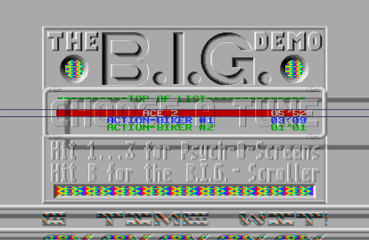
Figure 36: The main screen of the B.I.G.-Demo (screenshot)
If you listened to all the music, it would take more than four hours, with tunes that range from happy to melancholic, from pop to rock. Some of the 113 games on the Commodore 64 are Sanxion, Lightforce, Master of Magic, Monty On The Run, Crazy Comets, Thing On A Spring, and Auf Wiedersehen Monty (see figure 36).
The scrolling text occupied the bottom part of the screen in the lower border. Erik Simon (ES) used a similarly shaped font to the Super-Neo-Demo-Show, except that in the B.I.G.-Demo, it was much more colorful. It looked like it was embossed in the gray background with multicolored highlights running diagonally across each letter.
As can be seen in the screenshot above, a horizontal tubular gradient bar starts within the left border, crosses the main display area, and extends into the right border. At the bottom of the screen, the shadow covers part of the scrolling text. Both the shadow and the bar were achieved by changing the palette registers of the border color, making it look like the main contents extend across the left and right. Beneath the scroller, even further into the lower border, the top half of the logo of TEX protrudes into the screen.
The first and main screen of the B.I.G.-Demo is gray with some multicolored highlights. While not exactly the most exciting screen, it is well balanced compared to the previous two demos. It provides instructions to change the music and to switch to the impressive parts of the demo: the insanely technicolored Psycho-O-Screens.
3.2.1.2 Psych-O-Screen 1: The Escher-Perspective of a Rainbow-Pierced Cube
Color changes, color movement, colors spanning across the screen and into the left and right border; the first Psych-O-Screen plays with color cycling and false perspective effects. At the same time, the music from the main screen continues playing relentlessly.
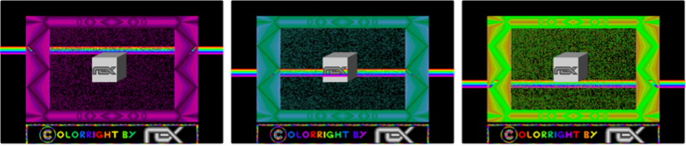
Figure 37: The first Psych-O-Screen's animated bar of rainbow colors moving up
and down the screen with the frame changing colors (screenshots)
In the center of the screen, a gray cube with The Exceptions' logo floats in a sea of static (see figure 37). A bar of rainbow colors as wide as the full screen with borders moves up and down. When the bar reaches the cube, it stretches behind the logo, but in front of the front-facing surface of the cube. At the same time, the bar protrudes behind the cube's sides, something that, according to all laws of perspective, should in fact be displayed behind the bar. This Esherian contraption is emphasized by the patterned frame of colors of a single tone that encase it, though the multicolor bar pierces it. All the while the colors of the frame pulsate in different colors fading in and out of multiple palettes of related shades (see figures 38 and 39).
Beneath the frame in the area of the screen's lower border, The Exceptions repeat their trick with graphics in the overscan area by painting in dozens of bright and contrasting colors the words "Colorright by," then a gray tubular representation of their TEX logo.
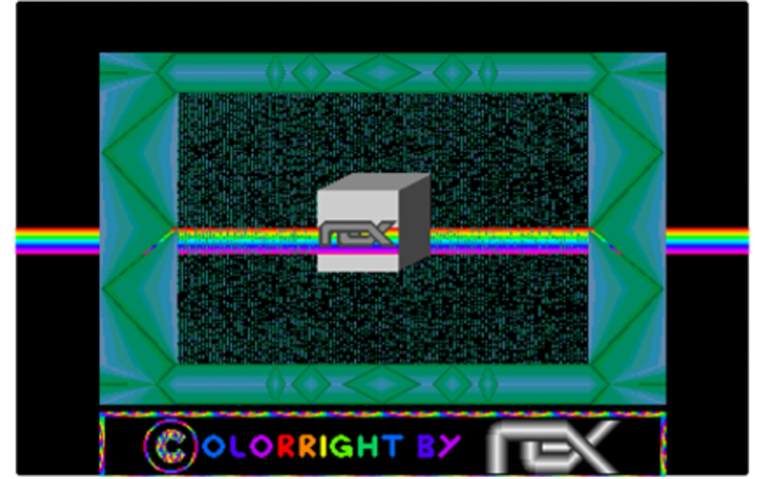
Figure 38: Detailed screenshot of the first Psych-O-Screen (screenshot)
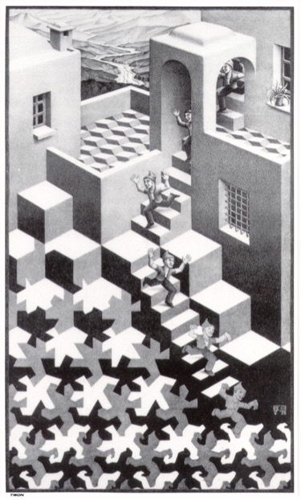
Figure 39: Warped Perspective in The Cycle by M.C. Escher
3.2.1.3 Psych-O-Screen 2: The Surreal Landscape in Technicolor Space
This screen shows a platform of a hundred colors floating in the blackness of space. On it, different-sized gray spheres cast shadows. Rectangular structures lie between the spheres; in the negative space of the shadows the rectangles cast, you can see the initials ES for the artist Erik Simon, the word TEX for The Exceptions, and the two connected musical notes for the music from the home screen that continues to play.
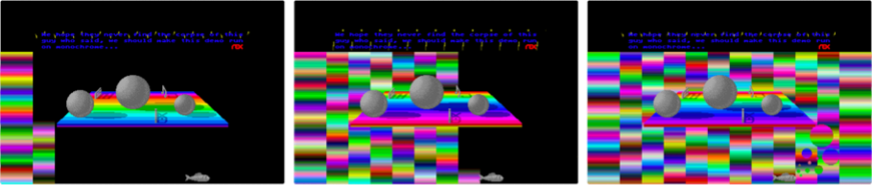
Figure 40: The multicolored platform with surreal shapes floating in an emptiness gradually filled with vibrant but interrupted scanlines
The surreal "Daliism" of this floating island does not remain alone for long. Starting from the left, multicolored scanlines start to fill the black background with vivid radiance until the whole width of the screen is covered (see figure 40). Beneath it all, a gray fish inexplicably hovers in the Atari ST's lower border.
Only now, as the screen is full of interrupted scanlines of vibrance, can we see a handful of spherical silhouettes right next to the fish. Perhaps these are technicolor bubbles leaving the fish's mouth (see figure 41).
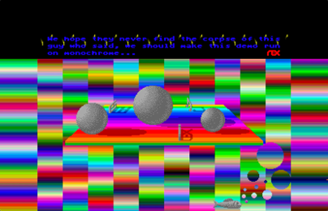
Figure 41: Detailed screenshot of the second Psych-O-Screen (screenshot)
On the second Psych-O-Screen, The Exceptions outdo themselves in the multitude of colors on the screen at the same time; a number close to the full available spectrum of the Atari ST's 512 colors. Surreal shapes in color space are the theme of this image, therefore it makes perfect sense that The Exceptions whimsically post the following text above their epic sea of luminance:
"We hope they never find the corpse of this guy who said, we should make this demo run on monochrome…"
3.2.1.4 Psych-O-Screen 3: The Moiré Fringe of Color Interference
If one could call the previous Psych-O-Screen merely colorful, then this third screen explodes with surreal colors like a digital Jackson Pollock on LSD. The Exceptions push the color limits and use as much of the borders as possible. Despite what the other screens showed, they had not yet managed to draw actual graphics into the side borders. Thus far, they could only produce straight horizontal lines in the left and right overscan area. These techniques fill the whole Psych-O-Screen (see figure 42).
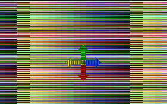
Figure 42: The third Psych-O-Screen of the B.I.G. Demo (screenshot)
They created a Psych-O-Screen with hundreds of interleaved lines of colors horizontally stacked onto the screen. These lines extended into all the borders, except for the top border. This was the closest to full overscan that the Atari ST had achieved so far.
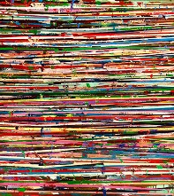
Figure 43: Vincent Pomilio's 141 Horizon Lines, 2018, acrylic,
pigmented plaster and wax on canvas
(Source:
http://www.vincentpomilio.com
)
3.2.1.5 Reset Screen
For the final trick, The Exceptions also included a reset screen. When the user pressed the reset button on their Atari ST, the computer did not reboot as it should by default. Showing a bomb on the screen was the standard way the Atari ST's operating system to report a system crash, an error, or an exception. But in this case, the bomb started to multiply and turn into a cartoon version of the system icon. The Exceptions had caught the reset command and created a mock screen with cartoon versions of the bomb.
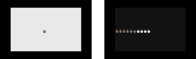
Figure 44: The Reset screen in the B.I.G. Demo (screenshots)
3.2.1.6 B.I.G.-Scroller
The scrolling text from the home screen can also be read in the BIG-Scroller, a separate screen of multicolored text scrolling through a dark cave with stalactites in front of it and stalagmites in the background.
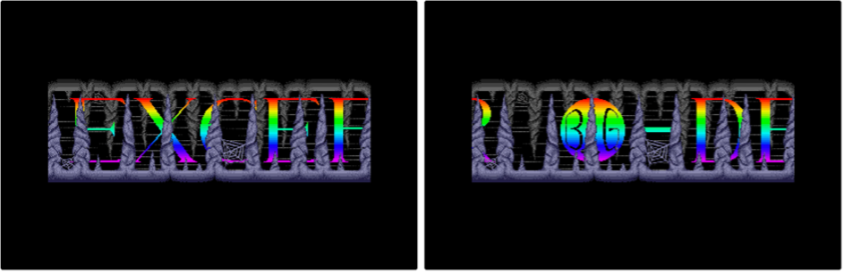
Figure 45: The B.I.G.-Scroller (screenshots)
The "Best in Galaxy" demo had the longest scrolling text ever produced in a demo up to that point (see figure 45). To this day, it still counts among the longest texts to ever be included in a demo on a 16-bit machine.[51] The text was distributed between the main screen and the "B.I.G. Scroller" screen and contains around 41,000 characters; these are more than 7,000 words at 42KB. Could it be that these 42KB were used deliberately because according to Douglas Adams in "The Hitch-Hiker's Guide to the Galaxy", the number 42 is the answer to the ultimate question of life, the universe, and everything?[52]
Here is the first paragraph of the B.I.G Demo in all its glory, changed to mixed-case characters for readability.
"TEX is back to strike again!! It has been a long time without demos, but this time we have succeeded in making the biggest demo in the universe: the Best In Galaxy (B.I.G.) Demo, offering 113 pieces of music with a total playing time of 243'39' (approximately 4.1 hours)!!! The whole thing is surrounded by stunning graphics, transparent scrolling in the lower border, 512 color Psych-O-Screens, the smoothest big scroller you ever saw and a whole bunch of rasters - quite an achievement, wouldn't you say?"
3.2.1.7 A Reading of the Scrolling Text
In this section, the focus will be on the examination of the scrolling text. It is the longest scrolling text in any of their demos up to this point, and therefore provides insights into the self-proclaimed intentions and thinking of the demo-makers. From the onset, it should be established that the majority of the text was not produced by the core members of the Exceptions, but rather by Richard Karsmakers (Cronos from the Amazing Cracking Conspiracy)[53], the editor of the diskmag ST-NEWS who helped the demo-makers start on this demo effort and distributed and advertised the demo once it was completed. That being said, the demo itself is the work of The Exceptions. They would not allow the text to contain anything that contradicts their intentions and thinking. The scrolling is summarized below.
After the introduction, with a description of the contents and features of the demo, the writer states the playtime of all the music combined and the length of the scrolling text. Then, the writer praises the contributors of the music, the code, the graphics, and himself before decrying the Atari ST's YM-2149 sound chip and graphics hardware. The next section is a list of credits for the demo's contributors. This is followed by a list of the records broken by the demo, which include the number of pieces of music, their total length, the length of the scrolling message, and the admirable achievement of compressing it all to a single-sided floppy disk.
The longest section is the greetings to other members of the scene. They range from members of the Atari ST demoscene, demo-makers on other systems, developers of commercial software on the ST, as well as people at the Atari Corporation who helped develop the machine. The language tropes used are playful insults, boasts, and other competitive linguistic forms to create sociality in the burgeoning demoscene on the Atari ST. Some of the greetings have playful remarks, such as "Amiga Software Syndicate (though they are working on the wrong machine)." While not explicitly stated, there are only men on the list.
Three of the "greetings" were disrespectful messages directed at groups whom The Exceptions despised for acting dishonorably: the cracking groups HSS that distributed programs that were not copy-protected by their publishers (but HSS credited themselves as having cracked the copy protection). the cracker group named Klu Klux Clan Conspiracy in bad taste, and Strike Force. Both wrongfully credited themselves with the cracks done by others:
"HSS (the biggest cocksucker around, that always puts his name in programs that others cracked, writes 'cracked by' in loading pictures of non-protected software, and that has to watch his steps before someone will punch his bleedin' nose)
Klu Klux Clan Conspiracy (another one of those queers, writing his name in some DMA crackings)
Strike Force (a bunch a half-ass fags that put smart-ass intros in front of programs they didn't even crack - using routines they pinched from others)."
Richard Karsmakers and The Exceptions use strong language in this section. It is not only offensive, but also sexually violent and homophobic and departs in tone from the other sections. This strong language was deliberately chosen to attack the cracker groups. These paragraphs provide an insight into the unspoken "codex" of the scene, where claiming merits is the primary currency. Wrongfully claiming credit is regarded as a violation of this codex. The Exceptions express their anger and dissatisfaction with these groups who acted dishonorably.
The writers are not native English-speakers. Derogatory vernacular in the 1980s was pejoratively directed at sexuality as offensive slurs. From a modern perspective, this is not acceptable and does not conform to our present-day cultural norms nor political correctness. In the context of the times and hyper-masculine action movies of the 1980s as watched by this generation of young men, the choice of words is offensive, but not unusual.
In the next section, there is an interesting duality. Richard Karsmakers' demoscene handle is Cronos, he is part of the Amazing Cracking Conspiracy (ACC), and he works on ST-NEWS under his real name, yet in this text, he uses his scene handle. To create distance between his civilian identity and his scene identity, he praises the work of ST-NEWS as though he is not a contributor:
"Amazing Cracking Conspiracy ('ST NEWS' is a great magazine! read more about it further in this scrolling message. Give our love to Willeke!)"
There is a mildly profane message to the "motherfucker that brought the virus on the ST." Karsmakers elaborates that "words fail to tell what we think of him, but I can assure you it ain't much good." This was the age when viruses were distributed through infected floppy disks, and in some cases, as infected files in a Bulletin Board System (BBS). Getting a virus into circulation in this way was a very deliberate act. Karsmakers closes with a humorous death curse to the virus maker ("...may thunder and lightning split your dim-witted skulls into a thousand tiny fragments…").
The next section lists metrics related to the creation of the demo, e.g., the number of developer hours that went into the development (2,019 hours), the number of bottles of soft drinks, beer, and wine, as well as the cups of tea and coffee that they drank during this time. The metrics go on to list materials used like diskettes, adhesive strips, paper, and other materials. They list all the computers they used. Oddly enough, this includes not only the Atari and Commodore 64, but also a Commodore Amiga and an Apple Macintosh II (which at the time was prohibitively expensive). They praise the applications they used, which includes another praise for the pixel-paint application NEOchrome.
There is a tidbit alluding to the demo-makers having to neglect their schoolwork due to working on their demo:
"82 hours spent cleaning the schoolyard (due to arriving too late at school or not properly attending the lessons while developing a piece of the demo on chemistry notepaper)."
A long section is dedicated to game musician Rob Hubbard:
"To fill this scrolling text with more or less useful things, I think it is more than appropriate to write something about the man to whom this demo program is dedicated: Rob Hubbard (music programmer on various computer systems amongst which are Commodore 64, Commodore Amiga and Atari ST)."
Below, Karsmakers describes the games that feature Hubbard's music and how Jochen Hippel (Mad Max) converted the tunes to the ST. Under his pseudonym, Karsmakers advertises his own diskmag ST-NEWS:
"Through TEX, I was told to give some attention to 'ST NEWS', an international disk magazine that is written in English and published through Richard of the ACC as a public domain offering."
Again, Richard Karsmakers (Cronos) references himself as a different person.
The writer is still trying to make the text longer, so he starts a joke section where he quotes the first joke ever in a scrolling message on the Commodore 64 ("Biggles" by FBG): "What does an elephant use as a tampon? [...] it's a sheep!" An unfunny and mildly offensive joke.
What follows is the "obligatory" Amiga vs. ST section. The competition between platforms has been a motivating factor for the demo-makers on the ST since the very beginning:
"Now, many Atari ST users start throwing up when they hear someone mentioning the Amiga, and nearly all Amiga users truly think the Atari ST is a heap of shit (and the worst thing is that they really think it is a heap of shit, whereas Atari ST users just talk negatively about the Amiga for jealousy reasons). That jealousy, by the way, grows less and less by the day because demo programs like this start appearing on the ST, together with more and more excellent games and other programs."
This section evokes the inherent technological tribalism of the demoscene. It specifically addresses the envy that owners of the Atari ST feel toward the Amiga's superior capabilities. The text states that Amiga owners look down on the ST for being the inferior machine. Certainly, some Amiga owners and demo-makers held the Atari ST and, by extension, its owners in contempt, but this was not as widespread an opinion in the Amiga demoscene. Many ST demos poked at the Amiga, yet very few Amiga demos attacked the ST.
The next section was a useful set of instructions on how to wire the ST's monitor port to an amplifier for stereo sound. This was followed very late in the scrolling text by the instructions on how to use the B.I.G. Demo, how to access the different Psych-O-Screens, and how to change the music. To be fair, the abbreviated instructions are also listed on the main screen.
The writers then describe the distribution model of the demo. This is generally how most demos on most computer systems were distributed: freely and as part of the "public domain" software scene. This is not the same legal term for intellectual property that is no longer copyrighted, but a by-now-extinct model of software distribution where public domain software libraries would distribute software that had explicitly been made available by its creators. Usually, the only costs that could be charged were for the disk and the effort to make the copy, therefore they remained affordable.
It is striking that The Exceptions urge for the free and wide distribution of their demo in this section. They also ask for donations. This is in 1988, nearly a decade before the prevalence of the free and open-source software movement.
"Since this demo program is public domain (shareware), it may be copied freely. Please copy it to everyone who wants it, as well as those who do not particularly want it (they might be grateful when they find out what they have copied when they start examining it more closely). If you think this demo program might be worth a small donation (please, don't take the word 'small' literally!), you can send any amount of money..."
It takes several hours for the full text to scroll by. If you read it on the screen while it scrolls, you would have a good amount of ghosting in your eyes by the end. Even after averting your sight from the screen, you would still see words scrolling by.[54]
If you sat through the full text, right at the very end, you learned the demo-maker Alyssa's secret technique to remove the lower border:
"Ok. In just a few seconds, -ME- from the Exceptions will start explaining how border scrolling techniques work. If you have not yet fetched your notepad and pencil, please prepare yourself for a mind-boggling piece of constant memory....
Here it is...."
[...]
"...if you remember our super-neo-demo-show you might have noticed a mistake in the pictures in the bottommost line (at the right border, 16 pixels are missing.....). These are effects of switching off the border. Attention!!! I'm now explaining the principles of switching off the border:
In the middle of the last line of the normal screen (no. 199 counted from 0) you must change the syncronization frequency from 50Hz to 60Hz. This will cause the Shifter to start the right border 16 pixles earlier than usual. Then wait till the electron beam is in the left border of the next line. There you must switch back from 60Hz to 50Hz and there will be no lower border again. The greatest problem is the exact timing of the synchronization switching!! Your rout will be disturbed by keyboard and timer C interrupts. If you don't succeed in timing the program exactly there might be 2 different effects: In the easier case you'll see the border again for a moment, in the other case you'll see curious things happen on your screen (flickering bitplanes and so on). An other result of switching off the border is a confused video Shifter which is starting the right border 16 pixles too soon as he doesn't want to show the last 2 bytes of the video memory. Therefore the first address displaid in the first line of the 'border' is 31998 bytes behind the first address of the screen !! So you must move your graphix 2 bytes to the left for not getting 'funny' pictures!
Puh !! Writing this text used much less time than making the lousy Psycho-2-Screen for which I needed 48 hours of hard programming and i don't know how long ES needed to paint the graphix with NEOchrome, the best painting program on the ST!!! That's about it, folks! The 99th percent of this scrolling message has just ticked away and we're unmistakably nearing the 100th (and final) percent now.... In a few seconds, the scrolling message will start anew.... Au revoir auf wiedersehen tot ziens arrividerci tschuess good bye houdoe doeg see you later, alligator .....Anyway, we hope to see you again in the next TEX demo (if one should be made sometimes).
Bye!"
3.2.1.8 Digital Sound Samples
When you scroll to the very bottom of the music list on the main screen of the B.I.G.-Demo, there is a special entry called "The Digital Department." Selecting it changes the view, and suddenly the Atari ST's speakers produce digital samples of near-professional quality with adaptations of even more games. The music was close to the capabilities of the Amiga.
Here, The Exceptions announced another demo called the Amiga-Sound-Demo.
After they had adapted nearly all of Rob Hubbard's Commodore 64 game music, it was now time to start adapting Hubbard's Commodore Amiga music. And who else would be capable of such a feat if not The Exceptions?
3.2.1.9 The Elements of Design and the Aesthetics of Pixels of the B.I.G. Demo
The images produced for the B.I.G.-Demo looked like they belonged in a computer or video game, but they were not created for that. They were created to stand on their own, to be beheld in their own space, all the while in the context of other images produced on computers. They were images composed of clearly visible and sometimes even distracting building blocks: pixels.
In the low-resolution images of the time composed of pixels, the pixels themselves did not simply represent a part of the image that, together with the other pixels, forms a greater whole: but the image as a complete artifact. Pixels were too big, too stark, too noticeable for that. Pixels also existed as independent entities known as "digital brush strokes," as clearly visible building blocks of the entire image. This gives each pixel a life of its own, an unapologetic presence, a value in and of itself, in addition to the part of the whole picture that it represents.
This made the pixelated images of this era stand apart from paintings, photography, and film frames. Today's displays with a greater resolution than the eye can discern can take the shape of anything we throw at them. They can "pretend" to show photos or reproductions of paintings or videos. The pixelated images of the Atari ST and similar computers could not pretend to be anything else than what they were. In this way, they truly embrace their form.
3.2.1.10 The Making of the B.I.G.-Demo
Richard Karsmakers (Cronos), the editor of the diskmag ST-NEWS, helped initiate the B.I.G.-Demo and wrote most of the record-breaking scrolling text. He had approached The Exceptions to motivate them to create the biggest and best demo so far. Five months later, they released it on January 24, 1988.
Jochen Hippel managed to get the raw data of the original music from the Commodore 64 to the Atari ST using a data cable and a conversion program supplied by Udo Fischer and Erik Simon. However, this does not mean that the music was in any way playable or sounded good on the Atari ST. The further manual conversion work was time-consuming and required many adaptations to the Atari ST's inferior sound chip.
The programming of the many Psych-O-Screens required exact timing and expert knowledge of the hardware. Together with the music, graphics, and digi-sound sample, all the data needed to be compressed to a single-sided 3.5" floppy disk so that The Exceptions could allow the demo to run on the largest possible range of Ataris.
Richard Karsmakers continued collaborating with members of The Exceptions, who contributed articles, graphics, and music to ST-NEWS. Karsmakers also wrote a first-hand account of how they finished their next demo, called the Amiga Demo.
3.2.2 Amiga Demo
The Amiga Demo directly targeted the superior sound capabilities of the Commodore Amiga by converting tunes that were regarded as impossible on the Atari ST's limited sound hardware. As if to conquer the last territory of the ST's inferiority compared to the Amiga, The Exceptions released the Amiga Demo as their last full demo.
In the Little Sound Demo and Little Color Demo, The Exceptions matched the sound generation capabilities of the Commodore 64's SID chip. Now, they conjured the same sound quality as the mighty Paula chip in the Commodore Amiga from the Atari ST's YM-chip. Paula could produce four channels of [55] sample-based digital sound. Technically, it was ahead of anything at the time, only to be matched on the IBM PC compatible with the introduction of the expensive Sound Blaster sound card and arguably, by the sound capabilities of the Sega MegaDrive/Genesis when it was released in 1988.
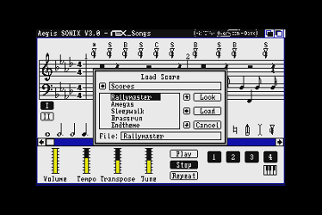
Figure 46: The music demo screen of the Amiga Demo (screenshot)
The Amiga Demo consisted of two screens. The first screen is an imitation of a music program on the Commodore Amiga called Aegis Sonix, which was a piece of software not written for the Atari ST (see figure 46). It takes advantage of the Amiga's sound capabilities and provides users with an environment to compose music using notation. The Exceptions did not port the actual program onto the ST; rather, they created a copy of the file selection screen and a part of the notational screen in the background.
They ported seven pieces of music from Amiga games, like Rally Master, Amegas, and Crashin' Robb, for a total of fifteen minutes of high-quality, four-voice musical tunes, even though the Atari ST is only capable of playing three-voice music. Users can switch music by choosing a tune with the cursor keys.
This digisound was impressive enough, given the ST's sound and music limitations, but the most impressive screen is accessed by pressing the "O" key (O for overscan). This opens up the overscan screen with no lower border and, for the first time on the Atari ST, no right border. Removing the right border and using the space for graphics was considered impossible. The Exceptions had done it.
They filled the screen with a pulsating pattern reminiscent of Yayoi Kusama's colorful polka dot art (see figures 47 and 48). Along the lower half of the screen, a transparent text scrolled. The blue fractal patterns shine through the red text.
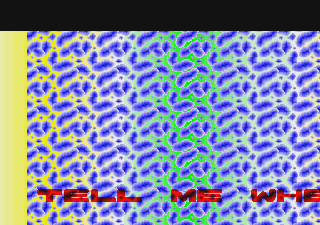
Figure 47: The scrolling text screen with no right border in the Amiga Demo (screenshot)
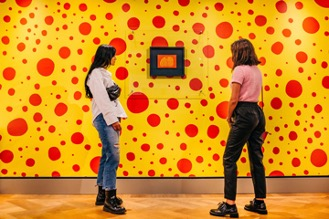
Figure 48: The borderless screen of the Amiga Demo is aesthetically reminiscent of the works of Yayoi Kusama at the Moco Museum
3.2.2.1 The Making of the Amiga Demo
The Exceptions not only broke two new limits of the Atari ST by opening the right border and playing Amiga-quality digimusic, but they also managed to break a personal record for the longest continuous time spent programming without interruption.
While the demo-makers were visiting their friend and ST-NEWS editor Richard Karsmakers, they wrote the whole demo in one continuous hackathon. Karsmakers chronicled the creation of the Amiga Demo in ST-NEWS.[56] They worked on the demo for 22 hours straight, fighting against the hardware, using tricks to overcome limitations, and all the while eating pizza and drinking soft drinks until most everyone fell asleep. Udo Fischer (-ME-) was left to wrap up the programming. Karsmakers contributed the contents of the scrolling text, Jochen Hippel (Mad Max) managed to faithfully convert the Amiga music to the ST's hardware, and Erik Simon (ES) created the graphics and the transparent font they needed for the demo.
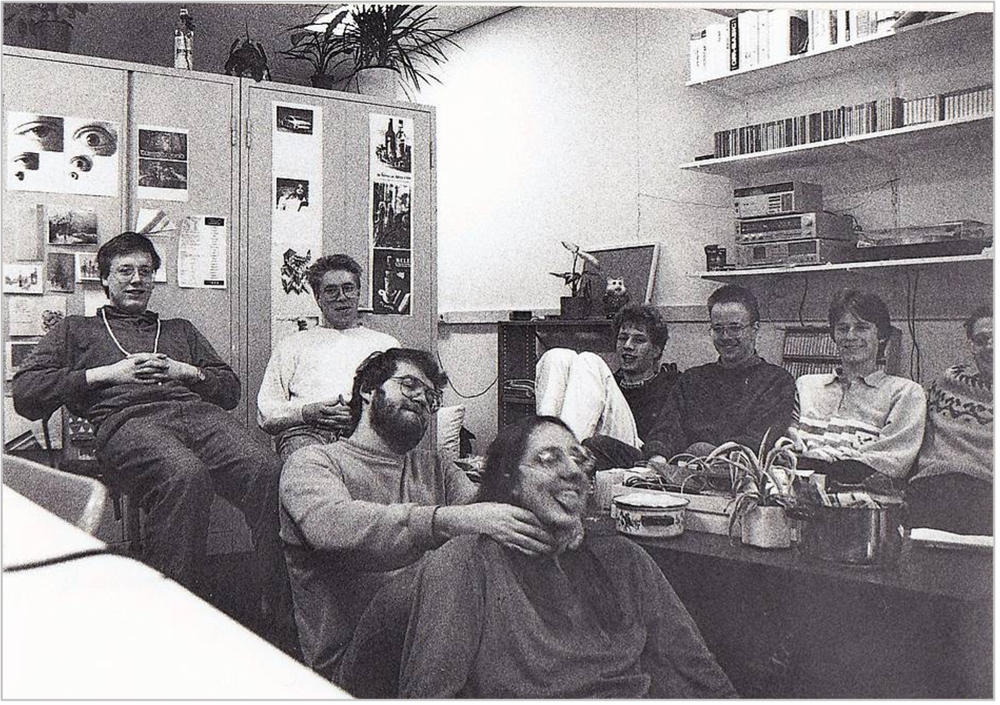
Figure 49: The Exceptions in the Netherlands when they wrote the Amiga Demo
Left to right: Antiware, Daryl, Es, Mad Max, Robert Heessels
(co-owner of STRIKE-a-LIGHT), Cronos, 6719 and half of -ME-.
(Source:
ST-NEWS
https://st-news.com/gallery/tex-in-holland/the-group-inside/
)
3.2.3 Mainstream Exposure
In 1988, Tarik Ahmia, the editor-in-chief of the established mainstream computer magazine ST-Magazin 68000er published by Markt & Technik in Bavaria, reached out to Udo Fischer, Erik Simon, Michael Raasch, and Gunter Bitz. The Exceptions had become minor celebrities in the Atari ST demoscene, but they were not widely known to the average computer-using audience. Tarik Ahmia convinced them to write a series of articles about their programming tricks. In five articles in 1988, The Exceptions revealed all of their programming secrets to a major audience and became widely known outside of the niche of the demoscene.[57] In photos, they were depicted as silhouettes and marketed as secret insiders with only their first names used. This made them seem forbidden and taboo, like true hackers. Undoubtedly, it contributed to their allure.
Their series of articles was called Die Hexer (German for "The Wizards" or "The Witchers").
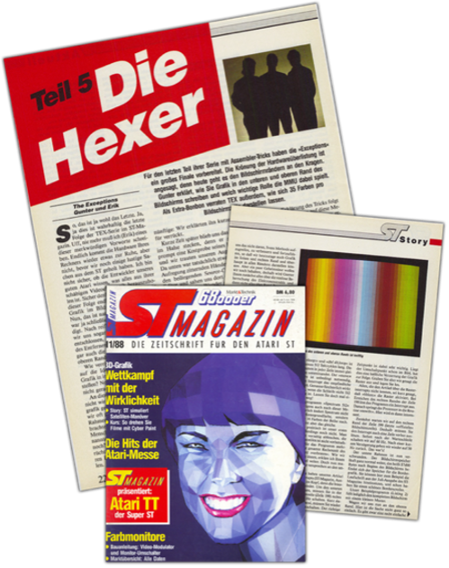
Figure 50: The Exceptions wrote about their programming tricks in the established mainstream computer magazine ST-Magazin 68000er and reached a wide audience
Under Tarik Ahmia's leadership, the ST-Magazin 68000er not only covered computing news, reviewed games and applications, and provided type-in programs,[58] but it offered several series examining how to produce creative work on the Atari ST. Aside from The Exceptions, the magazine featured series by commercial artists who produced their own magazines using desktop publishing software on the ST, and others creating 3D animations for commercial TV stations in Germany.
In this thesis, the articles in ST Magazin 68000er are used as sources for the technical explanations of the achievements of the demos. An in-depth analysis would exceed the scope here, but they warrant a short examination.
By the late 1980s, computers had become widespread tools in corporate administration. They were used for calculations, transactions, word processing and other business-related tasks. The use of computers as creative tools had been pioneered in the 1960s and 70s, but only started to break into commercial design in the late 1980s. By the time The Exceptions were featured in ST Magazin 68000er, the print industry around news media and publishing was in the process of transforming to digital production. The first Hollywood movies had started to feature computer animations. The tools used in the professional sector like Linotype page setting systems for page layouts in publishing and the Quantel Paintbox for infographics on TV were expensive and specialized. Home computer enthusiasts could identify that even though these systems were far more advanced than their own 16-bit computers, at their core, the expensive machines were not that much different than the higher-end home computers.
By showcasing early hobbyist digital creatives like The Exceptions, computer magazines demonstrated the creative potential of the machines. They provided instructions on how home users could produce their own works and inspire them to produce images, music, animations and even demos. Users could recognize that the expensive professional computers were much more capable, but they could also see that compared to the expensive machines, the gap between the capabilities of their own computers was closing. A Paintbox sold for $100,000 only half a decade earlier could display photorealistic images with 256 colors from a potential color palette of 16 million. Yet the artists used a graphics program on it that resembled the paint applications on the Atari ST, the Apple Macintosh and the Commodore Amiga. On a $1000 Atari ST, with a lot of effort, home users could create their own graphics that came close to the professional graphics; they could see the potential lying dormant in the technology.
By not only reporting about The Exceptions, but by having them write a series of articles, The Exceptions explained how to produce impressive results with the ST. Computer enthusiasts now saw the human beings behind the technology, and that The Exceptions were using the same tools available to home users. Even though it can be assumed that the editors of the magazine revised the articles provided by The Exceptions, there is still an endearing awkwardness in the text. Each article features a different member explaining their skill; for example, explaining how to program smooth scrolling routines, how to produce more colors on the screen, how to paint graphics, and how to write music. The articles are full of enthusiasm and pride at the achievements, yet they are apologetic in their descriptions of the solutions because they emphasize that there might be better ways to achieve the same results. The articles were clearly written by young people who had figured out techniques and wrote about them in a language that resonated with young readers.
By the mid-1980s, only a very few programmers were being promoted by name. They were not yet treated like authors of books or rock stars. This was the time before John Carmack and John Romero, who later became famous for the 3D-shooter Doom, and before Shiguro Miyamoto at Nintendo became famous. In the United States, there were already a small number of famous games developers like Richard Garriott (aka "Lord British") who had created the Ultima-Series of computer-role-playing-games; Roberta Williams who had written King's Quest and many other games at her company Sierra On-Line; and Sid Meier who created Pirates and had his name put on the box. In the UK, the Bitmap Brothers were being promoted by their publisher Mirrorsoft like rock stars, using the full public relations power of Robert Maxwell's media empire.[59]
But they all seemed so far away, none of them were from a small town in Germany. It was a breakthrough for members of the demoscene to be featured in a print magazine.
3.2.4 In Conclusion: The Time of Breakthroughs
This was the year that The Exceptions peaked as demo-makers and produced the most demos. Their demos broke numerous hardware limitations, like the ST's color limits, the bottom and the right screen borders, and the limits of the ST's sound chip with their music conversions from other systems like the C64 and the Amiga. In the B.I.G-Demo, they produced the longest scrolling text to date.
It was also the year that The Exceptions started to collaborate with others in the demoscene. At first with Alyssa whose programming trick for the removal of the bottom border was used in the Super-Neo-Demo-Show. Then, in the B.I.G.-Demo, they collaborated with the diskmag ST-NEWS for advertising and distribution, as well as the diskmag's editor Richard Karsmakers for project management and scrolling text.
1988 was the year that The Exceptions found recognition outside of their small scene by reaching a larger audience in the print publication ST-Magazin 68000er, explaining their programming tricks. But this was also the year that the main members of The Exceptions decided to become legitimate game programmers. They would no longer have time to create full demos, but the move was necessary for them to make a living from their skills.
And by 1988, The Exceptions had already inspired so many others in the Atari ST demoscene that they had passed the torch onto other demo-makers. However, in the next year, The Exceptions would still collaborate with others on their mega-demo: the biggest demo of all.
3.3 The Year 1989: Demo Coders Unite!
The year 1989 was the culmination of the Atari ST demoscene thus far. What started out as a single-screen demo with a scrolling text now evolved into barnstorming displays of animation, multilayered scrolling, color explosions, and 3D graphics.
No single demo-maker or team could deliver this breadth of effects, graphics, and music. It was the Union of multiple demo-groups, like The CareBears, Deltaforce, the TNT-Crew and, of course, The Exceptions, that came together to produce two of the best demos on the Atari ST in the year. The borders broke. The quest for true overscan was finally successful. The whole monitor area now became the playground for demos.
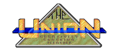
Figure 51: The logo of the Union: Creativity, Cracking, Pleasure (screenshot)
3.3.1 Union Demo
January 1989 saw the culmination of the Atari ST demo efforts so far. The multiple demo-groups had joined forces to produce the Union Demo. The Exceptions teamed up with the TNT Crew, the Care Bears, Level 16, the Replicants (a French cracker team), and the Delta Force.
The Union Demo was the first true mega-demo that deserved its name. In it, all the limits of the Atari ST were broken. In nearly a megabyte of compressed features, each demo-group had their own section; users moved a player character through a scrolling building to select the different screens, acting as an interactive menu.
Marco Breddin described the Union Demo as:
"Here it is, the computer without custom chips, without sprites, without scrolling, without a synthesizer that was built using rather too few quality checks but filled with passion, the charm and energy of a young computer generation that will give their all to break the borders and don't care about system specifications."[60]
Six demo-groups worked on the mega-demo: The CareBears (TCB), TNT-Crew, Delta Force, the Replicants, Level 16, and The Exceptions, with eighteen contributors to create the thirteen screens of the Union Demo. The examination of each dazzling screen starts below.
3.3.1.1 Startup Screen
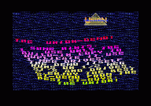
Figure 52: Startup screen of the Union Demo
(Source:
http://www.pouet.net/prod.php?which=11060
)
The startup screen appears when the demo loads, featuring the Union logo and sliding distorted text that moves across a vertically scrolling backdrop. The text layout is distorted along a wobbly sine curve, with the screen using more than the ST's standard 16 colors with music playing in the background.
This demo screen was created by The CareBears, Programming by Niclas Thissel (Nick/Nic) and Jas from The CareBears (TBC), with graphics by Erik Simon (ES), sound and music conversion by Jochen Hippel (Mad Max), and music composition by Jeroen Tel.[61]
3.3.1.2 Main Screen (Pseudo-Game)
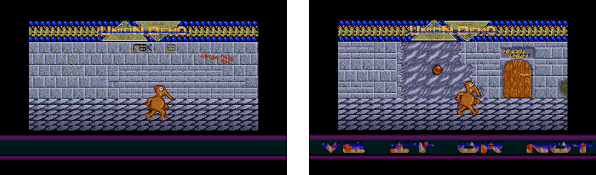
Figure 53: the pseudo-game and interactive main screen of the
Union Demo
(Source:
http://www.pouet.net/prod.php?which=11060
)
This screen serves as the menu for the whole demo. It is a computer game where users control the character of Charly, an aardvark figure that moves across a paved surface that scrolls horizontally. The wall behind it has several doors: a door for each segment of the demo.
The main area of the screen scrolls smoothly in all directions. Users move the character to a door, and then they can enter a different section of the demo. Beneath the interactive menu area, a smooth horizontal scrolling text moves across the full width of the screen using the left and right border. So together with the main area and the scrolling text, there are two independent scrolling areas. An alien landscape shines through the text, scrolling at a different speed than the letters. Of course, the screen features more than the standard 16 colors the ST can usually display at once.
The screen was programmed by Gunter Bitz (6719) of The Exceptions, with graphics by Erik Simon (ES). The graphics for the character of Charly were drawn by Micky. The scrolling text was programmed and written by The CareBears, the left and right borders were removed by the TNT-Crew, and Jochen Hippel (Mad Max) converted the music, which was composed by Jeroen Tel.
3.3.1.3 TCB 1 - Beat Dis Demo
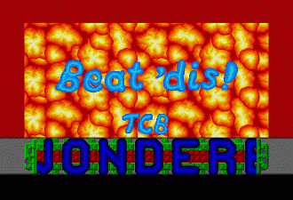
Figure 54: Beat 'Dis Demo by The CareBears in the Union Demo
(Source:
http://www.pouet.net/prod.php?which=11060
)
This screen features a vertical background scrolling smoothly with a large horizontal text scrolling across the lower part. Effectively, this demo screen showed two large scrolling areas.
The scroller at the bottom of the screen features parallax scrolling, where both the text and the hi-tech background move across the screen, but at different speeds. The graphic shows a field of explosions like the pattern of napalm bombing seen from afar, and the CareBears have placed the painted words: TCB and "Beat 'dis!" across the pattern of explosions and had it scroll vertically.
All the while, approximately 450KB of digitized, high-quality music can be heard. The voice samples "Get down to the funky beat" are repeated to a techno beat. Users need an Atari ST with at least one megabyte to hear the music. The demo-makers knew that in 1989, this was not yet a widespread configuration, so machines with less RAM would play chip music by Mad Max instead of the sampled sounds.
This part of the demo was programmed by Niclas Thissel (Nick/Nic) and Jas with graphics by Erik Simon (ES). The font was created by Nic using the PC-Font-Maker. The sampled sound and music were provided by An Cool. Mad Max programmed the sound chip to play the music composed by Fred Gray.
3.3.1.4 The Delta Force - Mega Demo (Spherical Demo)
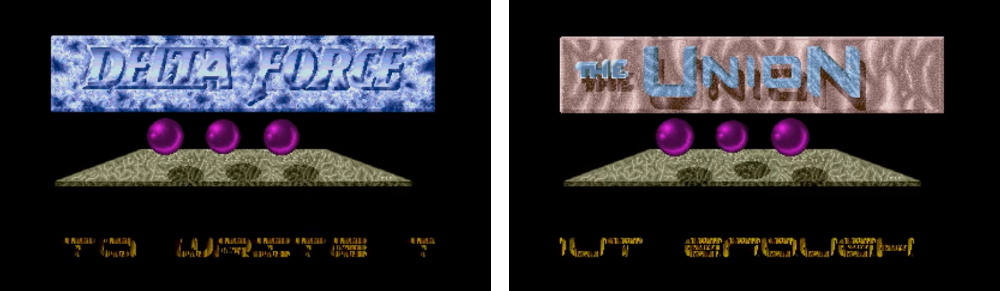
Figure 55: The Spherical Demo by the Delta Force in the Union
Demo
(Source:
http://www.pouet.net/prod.php?which=11060
)
The spherical demo screen by Delta Force is split up into three main sections. The top segment shows the logo of Delta Force, which rhythmically flips to change to the logo of the Union and back again.
The section in the center shows a three-dimensional textured plane with three bubbles floating above it that pulsate to the music corresponding to the Atari ST's three sound channels. The bubbles cast shadows on the plane.
The bottom part of the screen shows another scrolling text. This time, it is distorted along a sine curve as it horizontally flows across the screen, and each character's colors fluctuate in wave patterns. The text moves back and forth and occasionally flips vertically. It was clearly not only created to be read by the audience, but also to impress with its transformations. The background music was converted from the Commodore 64 game, Mega Apocalypse.
This screen was programmed by New Mode. The graphics were provided by Slime and Questlord from Delta Force. The graphics for the purple bubbles were created by Erik Simon (ES). The music was composed by Rob Hubbard and converted to be playable by the ST by Jochen Hippel (Mad Max).
3.3.1.5 TNT Crew 1 - Vector Screen
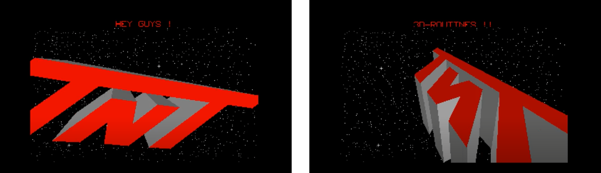
Figure 56: Vector Screen by the TNT Crew in the Union Demo (screenshots)
This screen has some of the first 3D graphics in a demo. In front of a starfield in space, fast and solid models are spinning across the screen. First, the logo of the TNT-Crew, that created this section of the demo, then a simplified version of the Union logo. The TNT-Crew had a 3D version of the famous Amiga ball, but their version had its center carved out. The final two models were a spaceship ripped from the game Starglider II and a carrier from Carrier Command. The presentation was accompanied by chip music, and users could switch between models by pressing the key 0 to 5.
This screen was programmed by Hexadez and Jojo from the TNT-Crew, with sound and music by Jochen Hippel (Mad Max) from The Exceptions (TEX). Later, the developers from the TNT-Crew moved into game development.
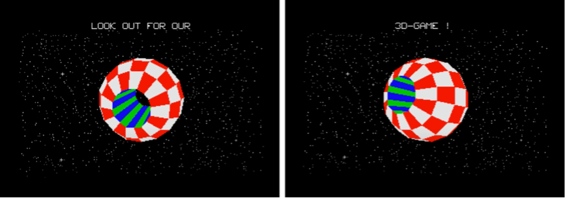
Figure 57: The Union Demo featured an adapted Amiga ball in 3D by the TNT Crew (screenshots)
3.3.1.6 TNT-Crew 2 - Superscroller
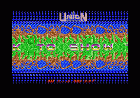
Figure 58: The Wow! Scroller by the TNT-Crew in the Union
Demo
(Source:
http://www.pouet.net/prod.php?which=11060
)
The Atari ST had no hardware to support smooth scrolling, but the TNT-Crew wanted to prove that it was possible to program a smooth horizontal scroller (that had been done before) in addition to programming four layers scrolling horizontally at independent speeds, simply to outdo their peers.
This screen features a slowly moving bubble pattern in the background. On top of that, a techno-organic layer scrolls across the screen. A green layer in unapologetically shrill colors speeds over the two background layers. To top it off, the scrolling text dashes over multiple planes. The four-layer scrolling is smooth at 50 frames per second. To add a final touch, the screen features more than 100 colors and is accompanied by digitized music.
When a user presses the arrow keys, the scrolling direction of the bubbly background layer changes. The smoothness and fluidity of the scrolling make this one of the more impressive screens of the whole demo.
This screen was programmed by Michael Bittner (Hexogen) from the TNT-Crew with graphics by Erik Simon (ES). Mad Max converted the music that was composed by Jeroen Tel.
3.3.1.7 TNT Crew 2 - Starballs
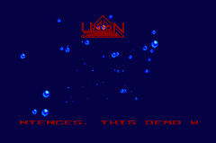
Figure 59: The Starballs screen by the TNT-Crew in the Union
Demo
(Source:
http://www.pouet.net/prod.php?which=11060
)
Starballs is probably the least impressive screen in the Union Demo. It shows a blue space with bubbles shooting towards the audience that scale fluently for a fake perspective effect. The Union logo hovers transparently on top of the screen while a relatively small scrolling text moves across the bottom of the screen. Unfortunately, the Starballs screen does not break any new ground. The background music was inspired by David Lynch's movie, Dune.
The screen was programmed by Michael Bittner (Hexogen) from the TNT-Crew with graphics by Erik Simon (ES), and Jochen Hippel (Mad Max) converted the music composition by Rob Hubbard.
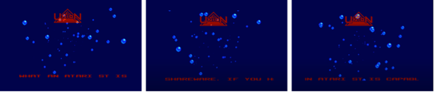
Figure 60: The bubbles in the Starballs screen in the Union Demo travel towards the audience
3.3.1.8 The Replicants - Wobbly Sprites
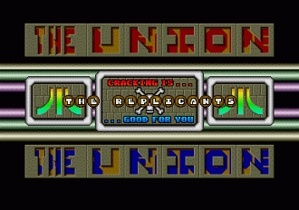
Figure 61: The Wobbly Sprites Screen by the Replicants in the
Union Demo
(Source:
http://www.pouet.net/prod.php?which=11060
)
The Wobbly Sprites screen created by the demo-group the Replicants shows two scrollers with an alpha effect. In the layer under the words "The Union" at the top and the bottom of the screen, just peeking in between the contours, two scrolling texts rush by that can only be read if you really focus on them. Thirteen sprites forming the name of the demo-group dance along sine waves and wobble across the screen. Six raster color bars move up and down at different speeds.
This screen was programmed by Excalibur with graphics by Rank Xerox, both part of the Replicants. The music was converted by Jochen Hippel (Mad Max) from an original game music composition by Jeroen Tel.
3.3.1.9 TCB 3 - Wow! Superscroller
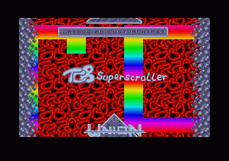
Figure 62: Wow! Scroller by The CareBears in the Union Demo
(Source:
http://www.pouet.net/prod.php?which=11060
)
The screen shows a multicolored scrolling text that occupies most of the screen. Meanwhile, the Union logo and The CareBears' brag wiggles up and down to the digitized industrial music featuring a sample of a lady moaning. The red background looks like cosmic worms or brain matter and scrolls vertically to complete the scrolling extravaganza.
This screen was programmed by Niclas Thissel (Nick/Nic) and Jas, graphics by ES, and sampled sound by An Cool.
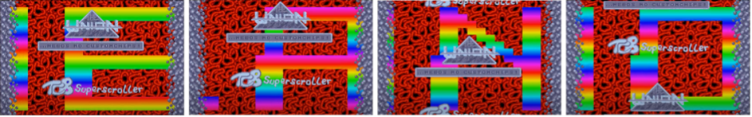
Figure 63: The massive side of the letters in the scrolling text in this section of the Union Demo
3.3.1.10 Level 16 - Full Screen Demo
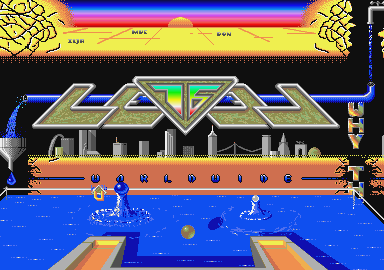
Figure 64: Level 16's Full Screen Demo in the Union Demo
(Source:
http://www.pouet.net/prod.php?which=11060
)
This was the very first time that the Atari ST could be coerced into using the full display and remain stable while doing so. The demo-makers group Level 16 perfected programming the electron beam to achieve this; the Atari ST's whole screen was now a stage for demos.[62]
The top of the screen shows an abstract landscape framed by what looks like brains. In the center, the sun is setting to a raster horizon with dozens of colors. The handles of the demo-makers are scattered across the golden plane.
The centerpiece is the Level 16 logo. A pipe runs through it from the right side of the screen, where the ST usually shows a border, across and behind the logo to the left side. In an allusion to a simple Rube Goldberg machine, the pipe spews blue liquid into a funnel, exactly where the left border should be visible. The base of the logo sports a simplified cityscape with letters spelling out "Worldwide" beneath it.
A pool of blue liquid with two splashes and the ever-present bubbles occupies the lower part of the screen. The whole screen is constantly traversed by a sprite in the shape of the Union's letter "U," moving into and out of areas that were previously reserved for the ST's screen borders, proving that this limit had now been broken.
How did the demo-makers conquer the whole screen? The screen height is about 412 lines, and the Atari's hardware counts each scanline so that it knows which line the monitor's beam is drawing at each moment. When the line has drawn the left border, the Atari ST starts to top draw the actual graphics; it stops drawing graphics at the right border. When the beam reaches bottom line of the screen, the ST stops drawing graphics.
The Atari ST could work using the North American NTSC standard and the European PAL standard. On a US monitor, the ST would switch its display to 60 Hz to display 60 pictures per second with a slightly smaller main area; on a European monitor, the ST would display 50 pictures per second with a larger main area.
The demo-makers at Level 16 realized that if they switched the computer from the European display frequency to the North American display frequency at just the right point, they could fool the hardware into continuing to draw into the border. This required very precise coordination of each instruction and knowing the exact position of the monitor's beam at any time so that the demo could switch frequency at the right point. To use the left border, the ST was forced to switch to the 71Hz frequency of the monochrome resolution for a split second to confuse the display hardware. This pulsating distortion of the machine's synapses allowed the ST to use the full screen. It became a carefully coordinated clockwork of colors and coordinates.
The Atari ST was complex enough to be powerful, but still simple enough that a person could understand every aspect of its hardware to hack it. And Level 16 hacked it to do exactly what they wanted.
The screen was programmed by Ilja from Level 16 with graphics by Don from Level 16 and Erik Simon (ES) from The Exceptions. The music featured on this screen is an original composition by Mad Max.
3.3.1.11 TCB 3 - Super-Multi-Plane-3D-Sine-Distorted-and-Whole-Lotta-Things-More-Scroller
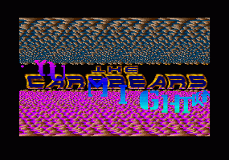
Figure 65: The third TCB scroller in the Union Demo
(Source:
http://www.pouet.net/prod.php?which=11060
)
While Level 16's fullscreen part of the Union Demo may technically be the most impressive section, the third scroller by The CareBears is not only technically impressive, but also aesthetically spectacular.
The CareBears created a multilayered scrolling screen. The top and bottom parts of the screen have about a dozen layers smoothly scrolling by at different speeds to create a parallax effect and a feeling of perspective depth. Like the warming inevitability of a summer's breeze, the multiple planes speed across the screen as smoothly and as fluently as a lover's pounding heart.
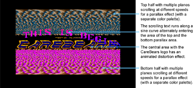
Figure 66: The different areas of the technically impressive multi-planar scroller by The CareBears
In the center of the screen, The CareBears logo becomes algorithmically distorted and mathematically flipped while pounding digi-techno plays. The fonts are metallic and inspired by the "heavy metal" aesthetic. They were, at the same time, cheap and glossy, inspired by computer games.
Over and across the whole screen, a sine wave of text whips across, moving in and out of the top and bottom sections. And all of this with hundreds of colors on the screen at the same time (see figure 66).
This screen was programmed by Niclas Thissel (Nick/Nic), who also created the graphics. Like in all the other sections, Jochen Hippel (Mad Max) converted the music—this time composed by Rob Hubbard.
3.3.1.12 TEX - Copier
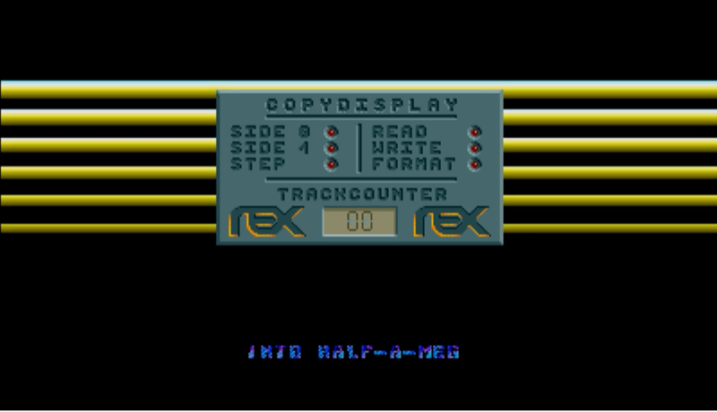
Figure 67: The disk copier by TEX in the Union Demo
(Source:
http://www.pouet.net/prod.php?which=11060
)
The total size of all the data of all the screens of the Union Demo was 1400KB, and the Exceptions helped find a way to compress all of this to 900KB. Udo Fischer (-ME-) programmed compression routines that unpacked the required parts of the demo when a user accessed one of the screens. The Union Demo came on a double-sided, 3.5" floppy disk that only fit 720KB. But The Exceptions came up with an extended disk format to fit the full 900KB of crunched code, graphics, and music (for more details on disk formats and how to archive them, please see Appendix I).
Unfortunately, this meant that the disk could not be copied the regular way using the Atari ST's operating system. Therefore, The Exceptions devised a copying program as part of the demo itself, which enabled users to make as many copies of the Union Demo as they liked. It formatted the target disk to take advantage of the extended disk format. Naturally, The Exceptions added their own color effects to this screen while the copying process was running.
The copier was programmed by Gunter Bitz (6719) and Jochen Hippel (Mad Max) of The Exceptions, with graphics by Erik Simon (ES), music composed by Jeroen Tel, and sound adaptation by Mad Max.
3.3.1.13 The Hidden Soundtracker Screen
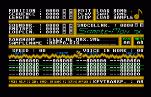
Figure 68: The Hidden Screen in the Union Demo
(Source:
http://www.pouet.net/prod.php?which=11060
)
The Union Demo has a hidden screen that can be accessed by moving the Charly character on the menu screen to one of the plants. Users are presented with the ST Soundtracker Sample-Mon, a music player that can reproduce the high-quality four-voice music from the Amiga on the ST's three-voice sound chip. When moving the mouse, the mouse pointer is replaced by computer game-like sprites.
The Soundtracker was programmed by Gunther Bitz (6719). With graphics by Hexagon and mouse sprite graphics by Erik Simon (ES), it features an original composition by Mad Max.
3.3.1.14 Breaking the Atari ST's Limitations
The Atari ST started out as the underdog of the 16-bit computer generation. It was affordable, but the hardware was rushed to market. The rushed hardware led to limitations on the number of colors on screen, big screen borders, no dedicated graphics chips for scrolling, no hardware support for sprites, and a sound chip that was used in 8-bit computers.
The Union Demo broke all these limitations. All the demo screens showcased dozens of colors that far surpassed the ST's standard 16 color limitation. The fullscreen section by Level 16 removed all the borders and used them to display graphics. The CareBears (TCB) and the TNT-Crew created super-smooth multidirectional scrollers, and in some cases, multiple scrollers on the same screen moving horizontally and vertically. The Replicants had more than a dozen sprites whizzing around fluidly. And the limitations of the ST's AY/YM sound chip was blown away by Mad Max, who managed to tickle music worthy of a Commodore Amiga out of the archaic sound hardware.
As The CareBears (TCB) adequately put it in their Wow! Superscroller: "The Union needs no custom chips." Where the hardware left them wanting, the demo-makers made up for it in their ingenuity for programming the software.
Stefan Posthuma, a demo-maker known as Digital Insanity from the demo-group The Lost Boys, wrote about the Union Demo in his "History of Demo Programming on the ST" in the diskmag ST-NEWS:[63]
"This was it. Everybody thought this to be the ultimate demo, something never to be equalled. Well, in a sense this is true. 'The Union Demo' is a true classic, making a heavy impact on the demo world. 'The Union Demo' contained a few screens by The CareBears, including the 3D-sinus-and-a-whollottamore-stuff (or something) scroller which is considered by most people to be the best demo screen ever written. With their screens The CareBears established themselves once and forever and their coder Nic (Niclas Thissel) was to become a living legend afterwards."
The Exceptions might have pioneered the Atari ST demoscene, but to create the Union Demo, six disparate groups from all over Europe came together to create thirteen demo screens: Niclas Thissel (Nic), Jas, Micky, and An Cool from The CareBears (TCB), New Mode, Slime and Questlord from Delta Force, Hexadez, Jojo, and Hexogen (Michael Bittner) from the TNT-Crew, Excalibur and Rank Xerox from The Replicants, Ilja and Don from Level 16, Erik Simon (ES), Jochen Hippel (Mad Max), Gunter Bitz (6719), and Udo Fischer (-ME-) from The Exceptions (TEX).
The knowledge, abilities, and powers of these eighteen individuals contributed to the technical masterpiece that surpassed all restrictions of the ST; now, the Atari's demoscene was alight with ideas and innovation.
3.3.2 In Conclusion: Inspiring Collective Creativity
The Union Demo was not only the swan song of The Exceptions as demo-makers; 1989 was the last year that The Exceptions spent any substantial amount of time on creating demo art. They moved on to game development and founded Thalion, together with other key players in the ST demo scene, including members of the TNT-Crew, The CareBears (TCB), and DeltaForce. They would spend the rest of 1989 working on their game releases. Meanwhile, other demo-groups from all over Europe saw what could be done with the Atari ST. The game was on.
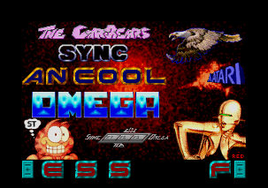
Figure 69: Swedish New Year Demo 1 (screenshot).
In 1989, The CareBears from Sweden released their impressive Swedish New Year Demo, and not to be outdone by their competition in the scene, they followed that with the Cuddly Demo and the Whattaheck Demo in the same year.
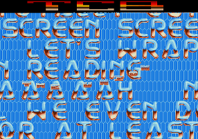
Figure 70: The Cuddly Demos (screenshot)
The CareBears proved that they were the new kings in the ST demoscene. Both on a technical and artistic level, they surpassed The Exceptions and, in turn, started to inspire other demo-makers to produce new material.
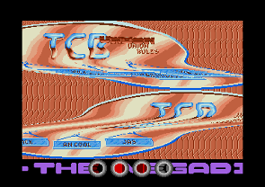
Figure 71: Whattaheck Demo (screenshot)
Phalanx released their Overdrive Demo in 1989 with music that came close to surpassing the efforts of Mad Max.
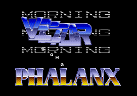
Figure 72: The Overdrive Demo (screenshot)
Thalion Software, the new home of The Exceptions in Gütersloh, Northrhine-Westphalia in West Germany, started to release games for the Atari ST and the Commodore Amiga. Among their first releases included the beat-em'-up game Chambers of Shaolin, the space shooter Warp, the jump-and-run Seven Gates of Jamabala, the shoot-'em-up Leavin' Teramis, and the puzzle game Atomix. They were technically sophisticated games with intricate graphics, smooth scrolling, and superior sound and music. Most were met with rave reviews and sold well in the market.
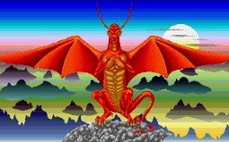
Figure 73: Title Screen of The Exceptions' first game:
Dragonflight
(Source:
http://thalion.exotica.org.uk/games/dragonflight/df.html
)
The crowning achievement of Thalion was the game that The Exceptions had started working on right after the B.I.G. Demo, a fantasy role-playing game called Dragonflight. They worked on the game until they achieved the level of perfection they wanted, and it was released in 1990. Dragonflight was based on an original story by Erik Simon, who also produced the graphics, while Udo Fischer programmed the game, and Jochen Hippel composed the music. The ST-NEWS veteran Richard Karsmakers wrote the novella that came as part of the package. The game was well-received and spawned two sequels.
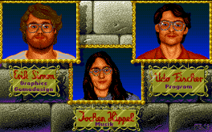
Figure 74: In-game credits of Dragonflight
(Source:
http://thalion.exotica.org.uk/games/dragonflight/df.html
)
After Dragonflight, The Exceptions released their most technically impressive game: Wings of Death, a vertical scrolling shoot-'em-up game. In both Wings of Death and in Dragonflight, there is a red dragon like the one we saw in the README.PRG demo back in 1987.
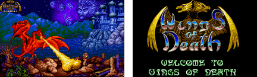
Figure 75: Title screens of Wings of Death
(Source:
http://thalion.exotica.org.uk/games/wod/wod.html
)
Wings of Death employed every trick of the trade to create a "bullet-hell" vertical scroller with fluid backgrounds, dozens of on-screen sprites and, of course, many more colors than the ST should have been able to display, accompanied by a pounding synth soundtrack.
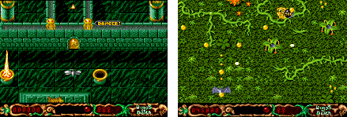
Figure 76: In-game graphics of Wings of Death
(Source:
http://thalion.exotica.org.uk/games/wod/wod2.html
)
The Exceptions had made it. Their dreams had come true; they evolved from basement-coders who created colorful demos into inspirational figures in demo art. They united the demoscene to make something spectacular and went on to become hard-working professionals in the bludgeoning games industry of the 1990s.
3.4 Conclusion: Limitations Fueling Creation
The Exceptions were not the best overall on the Atari ST, but they were the first, and therefore laid the groundwork for the best to come. Together with their fellow demo-makers, they learned their trade on a marginal computer with limited hardware. With their inquisitiveness and ingenuity, they managed to expose the last bits of performance out of the Atari ST and create demos that broke the last technical limits. While doing so, they created demo art and contributed to spawning a thriving scene on that system.
By leading the way, provoking their competitors, and showing what can be done, The Exceptions united groups from all over the world to produce collaborative demo art projects in a pre-web age. Then, they used their skills, discipline, and dedication to become game developers. The Exceptions changed the demoscene taking it from a basement hobby to a much larger phenomenon and lived to pursue their aspirations in the process.
3.5 Computing Since the Days of The Exceptions
What has happened in computing since The Exceptions? In short, essentially everything we know today. Since 1989, there has been the success of Microsoft Windows, the unstoppable expansion of the world wide web, mobile computing and smartphones, machine learning and artificial intelligence, blockchain and crypto-currencies, and a games industry with a larger total revenue than the movie business.[64]
Software development has changed too. The Exceptions, other demo-makers, and game creators used to write software for specific machines in assembly language. Most software today is written for platforms, such as the web, specific desktop operating systems like Windows or MacOS, smartphone platforms like Android or iOS, or gaming consoles like the Nintendo Switch, the Microsoft Xbox, or the Sony PlayStation. To summarize it all in a few paragraphs would be an exercise in futility; yet there are some key developments that need to be pointed out.
Some platforms transcend the hardware and can run on any sufficiently powerful system. The first of these is the web itself. Web browsers have turned into their own computing platform that opens a pressure valve into the information super stream and allows copious amounts of data to flow into it. The operating system of a device provides multiple layers, such as low-level functions and drivers, application programming interfaces and libraries, and finally, the user interface.
Additionally, third party software run their frameworks and engines, i.e., large collections of proven tools that enable more and more complex software projects and take away the need to develop common features every time from scratch. These include web frameworks, but also gaming engines like Unity and the Unreal Engine. Game engines are whole systems for creating everything a game needs, such as the game logic and the rules, the 3D worlds and the characters, the animation, and all the interactions.
Over the past thirty years, game development has moved from 2D to 3D, and at the same time, has become less dependent on the actual hardware and more dependent on the frameworks and engines. Games developers very rarely go right "to the metal"; they do not program at the very basic hardware level, but instead use frameworks or ideally a game engine like Unity or the Unreal Engine that run on the major computing and gaming platforms and is therefore independent of the actual hardware. On the other hand, games and 3D creation demand a high computing performance and are dependent on fast CPUs and powerful graphics cards, so that they can produce newer, more elaborate, and flashy games to draw in the gamers.
The wide variety of different home computers in the 1980s has disappeared today. Personal computers have settled on the commercial duopoly of the OS Microsoft Windows and the single manufacturer operating system of Apple's MacOS, with a consistent market share that hovers at ten percent. A multitude of Linux distributions compete for the desktops and notebooks of end users. Even though the global annual adoption of Linux seldom exceeds single digits percentages, in the background, most of the internet runs on Linux servers. Most commercial applications have an open-source equivalent, created, and maintained by large groups of enthusiasts who pore in their time and ingenuity. They have found an unlikely alliance with large corporations and public entities like governments, universities and municipalities that sponsor and help develop open-source software for their own benefit, and the benefit of all. For example, every dollar a large company like Novell spends on LibreOffice[65] puts more features into the hands of users free of charge. Every developer that a large pharmaceutical company like Pfizer puts on a Drupal project[66] helps elevate the content management system for all other users. Every contribution by a large CPU manufacturer like AMD to the Blender 3D software[67] puts capable tools into the hands of future 3D graphics artists.
The demoscene thrives to this day as a tiny corner of the open-source world and a niche of new media art. Members of the demoscene still create their art and participate in demo-parties and competitions. The computing performance available to users today is so vast that the demoscenes implement artificial limitations. They might be memory limitations, e.g., a full demo in 64Kbytes, or time limitations, e.g., to develop a demo in a 48-hour hackathon, or use old computing hardware that is far less capable than the hardware today to prove that in the hands of the right developers, it is far more capable than anyone would have thought.
And decades ago, on one of these obsolete computers, the Atari ST, The Exceptions were "ground zero" for their field of the demoscene.
Footnotes
[42]
The Interactive Fiction Archive.
https://www.ifarchive.org/
(Retrieved on May 9, 2020)
» Back [42]
[43]
Two years after the release of the ST, the Atari Corporation
introduced a Blitter chip (Bit-Block Transfer Processor) for
their computer that enabled it to shift larger amounts of
graphics data smoothly. It was an optional add-on that did not
catch on in gaming and only started to be used extensively with
the introduction of the enhanced Atari STE that came with the
Blitter built in by default.
» Back [43]
[44]
Rob Hubbard, Doctor of Music, 2016. Abertay University.
https://www.abertay.ac.uk/life/alumni-and-supporters/honorary-graduates/rob-hubbard/
(Retrieved on May 29, 2020)
» Back [44]
[45]
Ombler, Matt. Game changer: the Commodore 64 concert
https://www.theguardian.com/games/2019/jul/23/game-changer-the-commodore-64-concert
The Guardian, July 23, 2019 (Retrieved on May 29, 2020)
» Back [45]
[46]
ST-Magazin 09/1988. Die Hexer (Teil 3)
http://www.stcarchiv.de/stm1988/09/tex-die-hexer-teil-3
(Retrieved on May 29, 2020)
» Back [46]
[47]
Matt Anniss. Instrumental Instruments: Atari ST. Red
Bull Music Academy, October 6, 2017
https://daily.redbullmusicacademy.com/2017/10/atari-st-instrumental-instruments
(Retrieved on May 21, 2020)
» Back [47]
[48]
The person behind the handle Alyssa was male, despite the name
reading as female.
» Back [48]
[49]
Grau, Oliver. 2002.
Virtual Art: From Illusion to Immersion. Cambridge,
Massachusetts. London, England. The MIT Press.
» Back [49]
[50]
Strictly speaking, though, a mega-demo is not only composed of
different sections like the B.I.G.-Demo but each section is also
created by one or more different demo-groups.
» Back [50]
[51]
The length of the scrolling text was exceeded three years later
by the demo “Best Part of Creation” by Delta Force in 1991
https://aldabase.com/2016/01/26/best-part-of-the-creation-by-delta-force/
(Retrieved on June 18, 2020)
» Back [51]
[53]
Adams, Douglas.
The Hitchhiker's Guide to the Galaxy. Random House. New
York, 1979.
» Back [52]
[53]
Despite the name that references cracking, Richard Karsmakers'
group stopped all illegal pirating activities in 1986 and
announced it in ST-NEWS Volume 1, Issue 3 (only
available as an RTF file)
https://st-news.com/uploads/ST-News/Vol-1/ST_NEWS_1_3.rtf
(Retrieved on June 4, 2020)
» Back [53]
[54]
The full scrolling text can be found at demozoo.org:
https://demozoo.org/productions/76594/
(Retrieved on May 30, 2020)
» Back [54]
[55]
Pulse-code Modulation: Digitally samples of analog sound that
sounded like a professional synthesizer with much fewer
limitations than merely wave-generating sound chips like those
in the Atari ST and the Commodore 64.
» Back [55]
[56]
Richard Karsmakers. TEX in Holland.
ST-NEWS Vol. 3 Issue 2.
https://st-news.com/issues/st-news-volume-3-issue-2/features/tex-in-holland/
(Retrieved on June 17, 2020)
» Back [56]
[57]
STCArchiv. Archive of ST-Magazin 68000er.
http://www.stcarchiv.de/stmagazin.php
(Retrieved on May 30, 2020)
» Back [57]
[58]
As was customary in the 1980s, applications were distributed as
actual type-in program listings that users would type into their
machines. In the late 1980s, magazines started to provide
software disks on their covers.
» Back [58]
[59]
Harris, Duncan. Wall, Darren. 2016.
The Bitmap Brothers: Universe. Read Only Memory
» Back [58]
[60]
Breddin Marco A. (Foreword by Prof. Dr. Gundolf S. Freyermuth).
Breakin' the Borders. A true story of digital liberation and
Power Without the Price.
2017. Hannover. MicroZeit Verlag. Pages 92 - 93.
» Back [59]
[61]
All credits for the individual screens of the described in an
archived article of the disk-mag ST-NEWS at
https://st-news.com/issues/st-news-volume-4-issue-1/fun/union-demo/
(Retrieved on May 25, 2020)
» Back [61]
[62]
The very first demo that proved that the ST could be made to
display the full screen was the aptly named Fullscreen Demo by
the Flying Egg/Omega. Unfortunately, it was unstable and only
worked on certain Ataris.
» Back [62]
[63] Stefan Posthuma (aka Digital Insanity of The
Lost Boys). The History of Demo Programming On The ST.
https://st-news.com/issues/st-news-volume-7-issue-3/reviews/the-st-demo-scene-a-history/
(Retrieved on June 3, 2020)
» Back [63]
[64] Newzoo.com. The World's 2.7 Billion Gamers Will
Spend $159.3 Billion on Games in 2020; The Market Will Surpass
$200 Billion by 2023
https://newzoo.com/insights/articles/newzoo-games-market-numbers-revenues-and-audience-2020-2023/
(Retrieved on September 20, 2020)
» Back [64]
[63] The Linux Journal. Who Contributes the Most to
LibreOffice?
https://www.linuxjournal.com/content/who-contributes-most-libreoffice
(Retrieved on September 25, 2020)
» Back [65]
[66] The site of Dries Buytart, creator of Drupal.
Why large organizations are choosing to contribute to Drupal
https://dri.es/why-large-organizations-are-choosing-to-contribute-to-drupal
(Retrieved on September 25, 2020)
» Back [66]
[67] The largest contributors to the Blender fund.
https://fund.blender.org/
» Back [67]